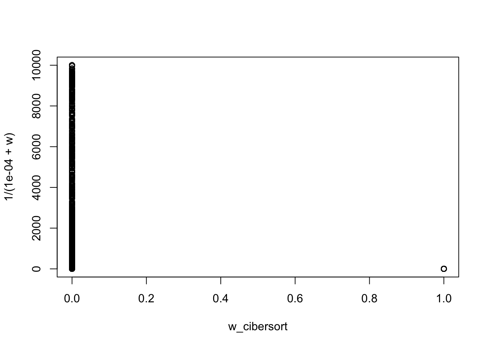

Last updated: 2021-04-08
Checks: 7 0
Knit directory: deconference/
This reproducible R Markdown analysis was created with workflowr (version 1.6.2). The Checks tab describes the reproducibility checks that were applied when the results were created. The Past versions tab lists the development history.
Great! Since the R Markdown file has been committed to the Git repository, you know the exact version of the code that produced these results.
Great job! The global environment was empty. Objects defined in the global environment can affect the analysis in your R Markdown file in unknown ways. For reproduciblity it’s best to always run the code in an empty environment.
The command set.seed(20200403) was run prior to running the code in the R Markdown file. Setting a seed ensures that any results that rely on randomness, e.g. subsampling or permutations, are reproducible.
Great job! Recording the operating system, R version, and package versions is critical for reproducibility.
Nice! There were no cached chunks for this analysis, so you can be confident that you successfully produced the results during this run.
Great job! Using relative paths to the files within your workflowr project makes it easier to run your code on other machines.
Great! You are using Git for version control. Tracking code development and connecting the code version to the results is critical for reproducibility.
The results in this page were generated with repository version 7f9bae3. See the Past versions tab to see a history of the changes made to the R Markdown and HTML files.
Note that you need to be careful to ensure that all relevant files for the analysis have been committed to Git prior to generating the results (you can use wflow_publish or wflow_git_commit). workflowr only checks the R Markdown file, but you know if there are other scripts or data files that it depends on. Below is the status of the Git repository when the results were generated:
Ignored files:
Ignored: .DS_Store
Ignored: .Rproj.user/
Ignored: data/.DS_Store
Untracked files:
Untracked: code/prepare_data_for_cibersort.R
Untracked: data/pancreas/
Unstaged changes:
Modified: code/deconference_setdata.R
Note that any generated files, e.g. HTML, png, CSS, etc., are not included in this status report because it is ok for generated content to have uncommitted changes.
These are the previous versions of the repository in which changes were made to the R Markdown (analysis/gene_weights.Rmd) and HTML (docs/gene_weights.html) files. If you’ve configured a remote Git repository (see ?wflow_git_remote), click on the hyperlinks in the table below to view the files as they were in that past version.
| File | Version | Author | Date | Message |
|---|---|---|---|---|
| Rmd | 7f9bae3 | Dongyue Xie | 2021-04-08 | wflow_publish(“analysis/gene_weights.Rmd”) |
| html | efec5ed | Dongyue Xie | 2021-04-08 | Build site. |
| Rmd | 576d2fe | Dongyue Xie | 2021-04-08 | wflow_publish(“analysis/gene_weights.Rmd”) |
| Rmd | 73cfe94 | DongyueXie | 2021-04-07 | add |
We discuss methods of calculating gene weights, when we create pseudo-bulk data from single cell reference data.
When creating pseudo-bulk data, we have choices to add/do not add the technical noise(typically Poisson noise). If we simply merge raw counts of cells from single cell reference data, then the pseudo-bulk data have no technical noise(it’s equivalent to take the individual reference matrix and multiply it by some cell type proportions, then the pseudo-bulk data have no technical noise). We can add technical noise(Poisson/negative binomial) to the pseudo-bulk data.
List of method:
Calculate weights from true individual matrices - this is the oracle one. The weights are inverse of the diagonal of sample covariance of \((X_i-U)\beta\).
Calculate weights from individual reference matrices - from a reference dataset.
Take the inverse of squared residual as weights
Take the inverse of (squared residual + diagonal of sample covariance calculated using reference dataset) as weights
Take the inverse of (squared residual + \(\beta^TV_g\beta\)) as weights
Use all bulk data to calculate weights.
We start with the no technical noise case. We’ll create pseudo bulk data using Xin data and use Seger data as reference; and we’ll also do the reverse.
library(MuSiC)Loading required package: nnlsLoading required package: ggplot2library(Biobase)Loading required package: BiocGenericsLoading required package: parallel
Attaching package: 'BiocGenerics'The following objects are masked from 'package:parallel':
clusterApply, clusterApplyLB, clusterCall, clusterEvalQ,
clusterExport, clusterMap, parApply, parCapply, parLapply,
parLapplyLB, parRapply, parSapply, parSapplyLBThe following objects are masked from 'package:stats':
IQR, mad, sd, var, xtabsThe following objects are masked from 'package:base':
anyDuplicated, append, as.data.frame, basename, cbind, colnames,
dirname, do.call, duplicated, eval, evalq, Filter, Find, get, grep,
grepl, intersect, is.unsorted, lapply, Map, mapply, match, mget,
order, paste, pmax, pmax.int, pmin, pmin.int, Position, rank,
rbind, Reduce, rownames, sapply, setdiff, sort, table, tapply,
union, unique, unsplit, which.max, which.minWelcome to Bioconductor
Vignettes contain introductory material; view with
'browseVignettes()'. To cite Bioconductor, see
'citation("Biobase")', and for packages 'citation("pkgname")'.library(xbioc)Loading required package: AnnotationDbiLoading required package: stats4Loading required package: IRangesLoading required package: S4Vectors
Attaching package: 'S4Vectors'The following object is masked from 'package:base':
expand.gridsource('code/deconference_main.R')Loading required package: SummarizedExperimentLoading required package: MatrixGenericsLoading required package: matrixStats
Attaching package: 'matrixStats'The following objects are masked from 'package:Biobase':
anyMissing, rowMedians
Attaching package: 'MatrixGenerics'The following objects are masked from 'package:matrixStats':
colAlls, colAnyNAs, colAnys, colAvgsPerRowSet, colCollapse,
colCounts, colCummaxs, colCummins, colCumprods, colCumsums,
colDiffs, colIQRDiffs, colIQRs, colLogSumExps, colMadDiffs,
colMads, colMaxs, colMeans2, colMedians, colMins, colOrderStats,
colProds, colQuantiles, colRanges, colRanks, colSdDiffs, colSds,
colSums2, colTabulates, colVarDiffs, colVars, colWeightedMads,
colWeightedMeans, colWeightedMedians, colWeightedSds,
colWeightedVars, rowAlls, rowAnyNAs, rowAnys, rowAvgsPerColSet,
rowCollapse, rowCounts, rowCummaxs, rowCummins, rowCumprods,
rowCumsums, rowDiffs, rowIQRDiffs, rowIQRs, rowLogSumExps,
rowMadDiffs, rowMads, rowMaxs, rowMeans2, rowMedians, rowMins,
rowOrderStats, rowProds, rowQuantiles, rowRanges, rowRanks,
rowSdDiffs, rowSds, rowSums2, rowTabulates, rowVarDiffs, rowVars,
rowWeightedMads, rowWeightedMeans, rowWeightedMedians,
rowWeightedSds, rowWeightedVarsThe following object is masked from 'package:Biobase':
rowMediansLoading required package: GenomicRangesLoading required package: GenomeInfoDbsource('code/utils.R')
seger <- readRDS("data/pancreas/segerstolpe_raw.rds")
#XinT2D.eset <- readRDS("data/MuSiC/XinT2Deset.rds")
#XinT2D.construct.full = bulk_construct(XinT2D.eset, clusters = 'cellType', samples = 'SubjectName')
#XinT2D.construct.full$prop.real = relative.ab(XinT2D.construct.full$num.real, by.col = FALSE)
xin_raw <- readRDS("data/pancreas/xin_raw.rds")
baron = readRDS("data/pancreas/baron.rds")#'@param b either a vector or a matrix of dimension K*n_bulk
createBulk_no.tech.noise = function(X_array, b,gene_names){
if(is.null(dim(b))){
y = apply(X_array,3,function(z){z%*%b})
}else{
G = dim(X_array)[1]
K = dim(X_array)[2]
Ni = dim(X_array)[3]
y = matrix(nrow=G,ncol=Ni)
for(i in 1:Ni){
y[,i] = X_array[,,i]%*%b[,i]
}
}
rownames(y) = gene_names
list(y=y,b=b)
}
createBulk_tech.noise = function(X_array, b, gene_names, ls_per_gene = 500,seed=12345){
G = dim(X_array)[1]
K = dim(X_array)[2]
Ni = dim(X_array)[3]
if(is.null(dim(b))){
y = apply(X_array,3,function(z){z%*%b})
}else{
y = matrix(nrow=G,ncol=Ni)
for(i in 1:Ni){
y[,i] = X_array[,,i]%*%b[,i]
}
}
y = y/colSums(y)*ls_per_gene*G
set.seed(seed)
y = matrix(rpois(prod(dim(y)),y),nrow=nrow(y),ncol=ncol(y))
rownames(y) = gene_names
list(y=y,b=b*ls_per_gene)
}
#'@param W variance, either a length G vector or a G*n_bulk matrix
#'@param b beta for evaluating weights
#'@param X reference matrix
#'@param Y bulk data
#'@param Vg variance
#'@param w.mode "equal", "res", "res+ref_var", "ref_var", "res+bvb"
wols = function(X,Y,
Vg=NULL,
b=NULL,
w.mode = "res",
adj.v = FALSE,
nu = 1e-4,
marker = NULL,
scale.y = FALSE,
X_array = NULL
){
if(!is.null(marker)){
X = X[marker,]
Y = Y[marker,]
Vg = Vg[marker,]
if(!is.null(X_array)){
X_array = X_array[marker,,]
}
}
n = nrow(X)
K = ncol(X)
ni = ncol(Y)
if(scale.y){
Y = apply(Y,2,function(z){z/(sum(z)/n)})
}
if(is.null(b)){
# then use b as
b = c(rowMeans(solve(t(X)%*%X)%*%t(X)%*%Y))
}
Sigma_sample = c()
for(i in 1:dim(X_array)[3]){
Sigma_sample = cbind(Sigma_sample,(X_array[,,i] - X)%*%b)
}
w = diag.cov(t(Sigma_sample))
W = w%*%t(rep(1,ni))
if(is.null(dim(b))){
b = b%*%t(rep(1,ni))
}
r = Y - X%*%b
beta_hat = matrix(nrow=ni,ncol=K)
for(j in 1:ni){
if(w.mode=="equal"){
wj = rep(1,n)
}
if(w.mode=="res"){
wj = 1/(nu + r[,j]^2)
}
if(w.mode=="res+ref_var"){
wj = 1/(nu + r[,j]^2+W[,j])
}
if(w.mode=="ref_var"){
wj = 1/(nu +W[,j])
}
if(w.mode=="res+bvb"){
noise_var = apply(Vg,1,function(v){
if(length(v)==K^2){
v = matrix(v,ncol = K)
}else if(length(v)==K){
V = diag(v)
}
t(b[,j])%*%v%*%b[,j]
})
wj = 1/(nu + r[,j]^2 + c(noise_var))
}
if(w.mode=="bvb"){
noise_var = apply(Vg,1,function(v){
if(length(v)==K^2){
v = matrix(v,ncol = K)
}else if(length(v)==K){
V = diag(v)
}
t(b[,j])%*%v%*%b[,j]
})
wj = 1/(nu + c(noise_var))
}
wj = wj/sum(wj)
#w.temp = 1/(W[j,]+nu)
#w.temp = w.temp/sum(w.temp)
#print(cor(wj,w.temp))
Xw = X*sqrt(wj)
yw = Y[,j]*sqrt(wj)
A = t(Xw)%*%Xw
if(adj.v){
Vw = Vg*wj
d_Vg = ncol(Vg)
if(d_Vg==K^2){
V = matrix(c(colSums(Vw)),ncol = K)
}else if(d_Vg==K){
V = diag(c(colSums(Vw)))
}else{
stop('check dimension of Vg')
}
}else{
V = 0
}
bhat = solve(A-V)%*%t(Xw)%*%yw
bhat = pmax(bhat,0)
bhat = bhat/sum(bhat)
beta_hat[j,] = bhat
}
beta_hat
}#'@param design.mat output from scRef_multi_proc, in which X is the reference matrix.
#'@param datax output from set_data_decon, in which y is the bulk data matrix.
#'@param b betas, K by n_bulk.
diag.cov = function(X){
#center X
X = scale(X,center=TRUE,scale=F)
colSums(X^2)/(nrow(X)-1)
}
simu_func = function(design.mat,datax,b,b.res,marker.gene=NULL,scale.y=FALSE){
n_bulk = ncol(datax$y)
G = nrow(design.mat$X)
if(!is.null(marker.gene)){
marker = which(datax$genes%in%marker.gene)
}else{
marker = NULL
}
cat('---no weight---',"\n")
b.est0 = wols(design.mat$X,datax$y,w.mode = 'equal',b=b.res,marker=marker,scale.y=scale.y,X_array = design.mat$X_array)
print(paste("rmse",round(rmse(rep(1,n_bulk)%*%t(b/sum(b)),(b.est0)),3)))
print(round(b.est0,2))
b.est = wols(design.mat$X,datax$y,Vg = design.mat$Vg,b=b.res,w.mode='ref_var',adj.v = TRUE,marker=marker,scale.y=scale.y,X_array = design.mat$X_array)
#print("No weight, ols adjusted for measurement error")
print(paste("rmse",round(rmse(rep(1,n_bulk)%*%t(b/sum(b)),(b.est)),3)))
print(round(b.est,2))
cat('---weight from reference data---',"\n")
if(is.null(b.res)){
b.ols = c(rowMeans(solve(t(design.mat$X)%*%design.mat$X)%*%t(design.mat$X)%*%datax$y))
}else{
b.ols = b.res
}
b.est.ref0 = wols(design.mat$X,datax$y,w.mode = 'ref_var',b=b.res,marker=marker,scale.y=scale.y,X_array = design.mat$X_array)
print(paste("rmse",round(rmse(rep(1,n_bulk)%*%t(b/sum(b)),(b.est.ref0)),3)))
print(round(b.est.ref0,2))
b.est.ref = wols(design.mat$X,datax$y,Vg = design.mat$Vg,b=b.res,w.mode='ref_var',adj.v = TRUE,marker=marker,scale.y=scale.y,X_array = design.mat$X_array)
print(paste("rmse",round(rmse(rep(1,n_bulk)%*%t(b/sum(b)),(b.est.ref)),3)))
print(round(b.est.ref,2))
cat('---weight from residual---',"\n")
b.est.ref0 = wols(design.mat$X,datax$y,b=b.res,w.mode='res',marker=marker,scale.y=scale.y,X_array = design.mat$X_array)
print(paste("rmse",round(rmse(rep(1,n_bulk)%*%t(b/sum(b)),(b.est.ref0)),3)))
print(round(b.est.ref0,2))
b.est.ref = wols(design.mat$X,datax$y,Vg = design.mat$Vg,b=b.res,w.mode='res',adj.v = TRUE,marker=marker,scale.y=scale.y,X_array = design.mat$X_array)
print(paste("rmse",round(rmse(rep(1,n_bulk)%*%t(b/sum(b)),(b.est.ref)),3)))
print(round(b.est.ref,2))
cat('---weight from residual and reference---',"\n")
b.est.ref0 = wols(design.mat$X,datax$y,b=b.res,w.mode = 'res+ref_var',marker=marker,scale.y=scale.y,X_array = design.mat$X_array)
print(paste("rmse",round(rmse(rep(1,n_bulk)%*%t(b/sum(b)),(b.est.ref0)),3)))
print(round(b.est.ref0,2))
b.est.ref = wols(design.mat$X,datax$y,Vg = design.mat$Vg,b=b.res,w.mode = 'res+ref_var',adj.v = TRUE,marker=marker,scale.y=scale.y,X_array = design.mat$X_array)
print(paste("rmse",round(rmse(rep(1,n_bulk)%*%t(b/sum(b)),(b.est.ref)),3)))
print(round(b.est.ref,2))
cat('---weight from residual and reference bvb---',"\n")
b.est.ref0 = wols(design.mat$X,datax$y,b=b.res,w.mode = 'res+bvb',Vg = design.mat$Vg,marker=marker,scale.y=scale.y,X_array = design.mat$X_array)
print(paste("rmse",round(rmse(rep(1,n_bulk)%*%t(b/sum(b)),(b.est.ref0)),3)))
print(round(b.est.ref0,2))
b.est.ref = wols(design.mat$X,datax$y,Vg = design.mat$Vg,b=b.res,w.mode = 'res+bvb',adj.v = TRUE,marker=marker,scale.y=scale.y,X_array = design.mat$X_array)
print(paste("rmse",round(rmse(rep(1,n_bulk)%*%t(b/sum(b)),(b.est.ref)),3)))
print(round(b.est.ref,2))
}\(y = X\beta = U\beta + (X-U)\beta = U\beta + r\).
\(y_g = u_g^T\beta+r_g\).
\(w_g = 1/r_g^2\).
\(y_g/r_g = x_g^T\beta/r_g+1\). So the fit is very good.
cell_types = c('alpha', 'beta', 'delta', 'gamma')
K = length(cell_types)
rm.indi = c("Non T2D 4","Non T2D 7","Non T2D 10","Non T2D 12")
#rm.indi = levels(XinT2D.eset$SubjectName)[rm.indi]
rm.indi.idx = which(xin_raw$individual%in%rm.indi)
datax.xin = set_data_decon(Y = xin_raw[,-rm.indi.idx],cell_types = cell_types, gene_thresh = 0,max_count_quantile = 1,w=1)
design.mat.xin = scRef_multi_proc(datax.xin$Y,datax.xin$cell_type_idx,datax.xin$indi_idx,
estimator="separate",est_sigma2 = FALSE,
meta_var='plug_in',meta_mode='smooth',
verbose = F)
# create bulk data
b = c(0.1,0.1,0.3,0.5)
bulk.xin = createBulk_no.tech.noise(design.mat.xin$X_array,b,gene_names = rownames(xin_raw))datax.seger = set_data_decon(y = bulk.xin$y, Y = seger,
cell_types = cell_types, gene_thresh = 0,max_count_quantile = 1,w=1)
design.mat.seger = scRef_multi_proc(datax.seger$Y,datax.seger$cell_type_idx,datax.seger$indi_idx,estimator="separate",est_sigma2 = FALSE,
meta_var='plug_in',meta_mode='smooth',
verbose = F)
simu_func(design.mat.seger,datax.seger,b,b)---no weight---
[1] "rmse 0.143"
[,1] [,2] [,3] [,4]
[1,] 0.27 0.21 0.17 0.35
[2,] 0.26 0.20 0.18 0.36
[3,] 0.21 0.10 0.20 0.49
[4,] 0.18 0.06 0.30 0.46
[5,] 0.46 0.11 0.25 0.18
[6,] 0.24 0.16 0.32 0.28
[7,] 0.26 0.14 0.17 0.43
[8,] 0.21 0.18 0.16 0.45
[9,] 0.22 0.15 0.23 0.41
[10,] 0.31 0.16 0.23 0.30
[11,] 0.22 0.10 0.19 0.50
[12,] 0.31 0.13 0.21 0.35
[13,] 0.47 0.11 0.30 0.13
[14,] 0.24 0.06 0.13 0.57
[1] "rmse 0.144"
[,1] [,2] [,3] [,4]
[1,] 0.27 0.19 0.13 0.40
[2,] 0.16 0.36 0.04 0.44
[3,] 0.04 0.23 0.29 0.44
[4,] 0.12 0.16 0.41 0.31
[5,] 0.39 0.17 0.27 0.17
[6,] 0.04 0.19 0.18 0.58
[7,] 0.04 0.25 0.00 0.71
[8,] 0.13 0.21 0.02 0.63
[9,] 0.07 0.19 0.10 0.64
[10,] 0.07 0.13 0.32 0.48
[11,] 0.12 0.30 0.16 0.43
[12,] 0.07 0.18 0.30 0.45
[13,] 0.28 0.29 0.29 0.14
[14,] 0.16 0.14 0.14 0.56
---weight from reference data---
[1] "rmse 0.122"
[,1] [,2] [,3] [,4]
[1,] 0.28 0.19 0.17 0.36
[2,] 0.18 0.32 0.13 0.37
[3,] 0.08 0.23 0.28 0.41
[4,] 0.15 0.18 0.34 0.33
[5,] 0.39 0.17 0.23 0.21
[6,] 0.08 0.19 0.23 0.50
[7,] 0.08 0.24 0.08 0.59
[8,] 0.16 0.20 0.13 0.51
[9,] 0.11 0.18 0.18 0.53
[10,] 0.11 0.15 0.30 0.45
[11,] 0.15 0.27 0.20 0.38
[12,] 0.10 0.19 0.29 0.42
[13,] 0.29 0.27 0.25 0.19
[14,] 0.19 0.14 0.19 0.48
[1] "rmse 0.144"
[,1] [,2] [,3] [,4]
[1,] 0.27 0.19 0.13 0.40
[2,] 0.16 0.36 0.04 0.44
[3,] 0.04 0.23 0.29 0.44
[4,] 0.12 0.16 0.41 0.31
[5,] 0.39 0.17 0.27 0.17
[6,] 0.04 0.19 0.18 0.58
[7,] 0.04 0.25 0.00 0.71
[8,] 0.13 0.21 0.02 0.63
[9,] 0.07 0.19 0.10 0.64
[10,] 0.07 0.13 0.32 0.48
[11,] 0.12 0.30 0.16 0.43
[12,] 0.07 0.18 0.30 0.45
[13,] 0.28 0.29 0.29 0.14
[14,] 0.16 0.14 0.14 0.56
---weight from residual---
[1] "rmse 0.004"
[,1] [,2] [,3] [,4]
[1,] 0.10 0.10 0.30 0.50
[2,] 0.09 0.11 0.31 0.50
[3,] 0.09 0.10 0.31 0.50
[4,] 0.10 0.10 0.30 0.50
[5,] 0.10 0.10 0.30 0.50
[6,] 0.10 0.10 0.30 0.50
[7,] 0.10 0.10 0.30 0.50
[8,] 0.11 0.10 0.30 0.50
[9,] 0.10 0.10 0.30 0.50
[10,] 0.10 0.10 0.30 0.50
[11,] 0.10 0.10 0.30 0.49
[12,] 0.10 0.10 0.30 0.50
[13,] 0.10 0.11 0.29 0.50
[14,] 0.10 0.10 0.30 0.49
[1] "rmse 0.083"
[,1] [,2] [,3] [,4]
[1,] 0.04 0.07 0.26 0.63
[2,] 0.01 0.12 0.35 0.52
[3,] 0.00 0.00 0.52 0.48
[4,] 0.00 0.10 0.28 0.62
[5,] 0.02 0.12 0.28 0.59
[6,] 0.02 0.10 0.27 0.61
[7,] 0.07 0.07 0.37 0.50
[8,] 0.03 0.05 0.39 0.53
[9,] 0.04 0.09 0.29 0.58
[10,] 0.01 0.03 0.41 0.55
[11,] 0.06 0.06 0.31 0.57
[12,] 0.01 0.08 0.35 0.56
[13,] 0.02 0.13 0.09 0.75
[14,] 0.00 0.10 0.29 0.61
---weight from residual and reference---
[1] "rmse 0.032"
[,1] [,2] [,3] [,4]
[1,] 0.08 0.11 0.33 0.47
[2,] 0.05 0.13 0.33 0.49
[3,] 0.08 0.13 0.33 0.46
[4,] 0.09 0.13 0.34 0.44
[5,] 0.08 0.13 0.34 0.44
[6,] 0.07 0.12 0.31 0.50
[7,] 0.09 0.12 0.30 0.49
[8,] 0.08 0.14 0.30 0.47
[9,] 0.07 0.12 0.29 0.53
[10,] 0.07 0.12 0.32 0.49
[11,] 0.11 0.12 0.27 0.50
[12,] 0.11 0.14 0.32 0.44
[13,] 0.13 0.14 0.30 0.42
[14,] 0.11 0.14 0.32 0.43
[1] "rmse 0.05"
[,1] [,2] [,3] [,4]
[1,] 0.03 0.08 0.38 0.51
[2,] 0.00 0.10 0.36 0.54
[3,] 0.04 0.09 0.38 0.49
[4,] 0.05 0.10 0.39 0.45
[5,] 0.04 0.10 0.40 0.46
[6,] 0.03 0.09 0.33 0.55
[7,] 0.05 0.10 0.31 0.55
[8,] 0.04 0.12 0.33 0.52
[9,] 0.02 0.09 0.29 0.60
[10,] 0.03 0.08 0.35 0.53
[11,] 0.07 0.10 0.25 0.57
[12,] 0.07 0.11 0.35 0.47
[13,] 0.10 0.12 0.34 0.44
[14,] 0.07 0.11 0.37 0.45
---weight from residual and reference bvb---
[1] "rmse 0.019"
[,1] [,2] [,3] [,4]
[1,] 0.09 0.11 0.32 0.48
[2,] 0.07 0.13 0.31 0.50
[3,] 0.09 0.12 0.31 0.48
[4,] 0.10 0.12 0.31 0.47
[5,] 0.09 0.12 0.32 0.47
[6,] 0.09 0.11 0.30 0.49
[7,] 0.10 0.12 0.30 0.48
[8,] 0.08 0.13 0.29 0.49
[9,] 0.08 0.11 0.30 0.51
[10,] 0.09 0.11 0.31 0.49
[11,] 0.11 0.11 0.28 0.49
[12,] 0.11 0.12 0.31 0.46
[13,] 0.12 0.13 0.30 0.45
[14,] 0.11 0.12 0.32 0.45
[1] "rmse 0.041"
[,1] [,2] [,3] [,4]
[1,] 0.03 0.08 0.36 0.53
[2,] 0.00 0.09 0.34 0.57
[3,] 0.04 0.09 0.35 0.53
[4,] 0.05 0.09 0.34 0.52
[5,] 0.04 0.09 0.35 0.52
[6,] 0.04 0.08 0.32 0.56
[7,] 0.06 0.09 0.32 0.54
[8,] 0.02 0.11 0.31 0.57
[9,] 0.03 0.08 0.31 0.58
[10,] 0.05 0.07 0.33 0.55
[11,] 0.08 0.08 0.29 0.55
[12,] 0.05 0.10 0.34 0.51
[13,] 0.07 0.11 0.32 0.50
[14,] 0.06 0.09 0.35 0.50simu_func(design.mat.seger,datax.seger,b,NULL)---no weight---
[1] "rmse 0.143"
[,1] [,2] [,3] [,4]
[1,] 0.27 0.21 0.17 0.35
[2,] 0.26 0.20 0.18 0.36
[3,] 0.21 0.10 0.20 0.49
[4,] 0.18 0.06 0.30 0.46
[5,] 0.46 0.11 0.25 0.18
[6,] 0.24 0.16 0.32 0.28
[7,] 0.26 0.14 0.17 0.43
[8,] 0.21 0.18 0.16 0.45
[9,] 0.22 0.15 0.23 0.41
[10,] 0.31 0.16 0.23 0.30
[11,] 0.22 0.10 0.19 0.50
[12,] 0.31 0.13 0.21 0.35
[13,] 0.47 0.11 0.30 0.13
[14,] 0.24 0.06 0.13 0.57
[1] "rmse 0.107"
[,1] [,2] [,3] [,4]
[1,] 0.04 0.18 0.22 0.57
[2,] 0.00 0.33 0.15 0.52
[3,] 0.00 0.17 0.32 0.51
[4,] 0.06 0.16 0.41 0.37
[5,] 0.12 0.19 0.36 0.33
[6,] 0.00 0.15 0.21 0.63
[7,] 0.00 0.20 0.08 0.73
[8,] 0.00 0.18 0.12 0.70
[9,] 0.00 0.16 0.13 0.71
[10,] 0.00 0.11 0.36 0.53
[11,] 0.00 0.18 0.32 0.50
[12,] 0.00 0.16 0.33 0.51
[13,] 0.08 0.23 0.35 0.35
[14,] 0.01 0.11 0.25 0.63
---weight from reference data---
[1] "rmse 0.088"
[,1] [,2] [,3] [,4]
[1,] 0.13 0.19 0.22 0.47
[2,] 0.05 0.31 0.19 0.44
[3,] 0.00 0.21 0.31 0.48
[4,] 0.14 0.19 0.33 0.35
[5,] 0.19 0.20 0.29 0.32
[6,] 0.00 0.18 0.25 0.57
[7,] 0.00 0.21 0.16 0.63
[8,] 0.00 0.20 0.19 0.61
[9,] 0.04 0.17 0.19 0.59
[10,] 0.02 0.15 0.33 0.50
[11,] 0.05 0.20 0.30 0.45
[12,] 0.03 0.20 0.31 0.47
[13,] 0.15 0.24 0.29 0.32
[14,] 0.10 0.14 0.24 0.52
[1] "rmse 0.107"
[,1] [,2] [,3] [,4]
[1,] 0.04 0.18 0.22 0.57
[2,] 0.00 0.33 0.15 0.52
[3,] 0.00 0.17 0.32 0.51
[4,] 0.06 0.16 0.41 0.37
[5,] 0.12 0.19 0.36 0.33
[6,] 0.00 0.15 0.21 0.63
[7,] 0.00 0.20 0.08 0.73
[8,] 0.00 0.18 0.12 0.70
[9,] 0.00 0.16 0.13 0.71
[10,] 0.00 0.11 0.36 0.53
[11,] 0.00 0.18 0.32 0.50
[12,] 0.00 0.16 0.33 0.51
[13,] 0.08 0.23 0.35 0.35
[14,] 0.01 0.11 0.25 0.63
---weight from residual---
[1] "rmse 0.115"
[,1] [,2] [,3] [,4]
[1,] 0.27 0.13 0.22 0.38
[2,] 0.27 0.14 0.22 0.37
[3,] 0.27 0.14 0.22 0.37
[4,] 0.27 0.13 0.22 0.37
[5,] 0.27 0.14 0.22 0.37
[6,] 0.27 0.14 0.22 0.37
[7,] 0.26 0.14 0.21 0.38
[8,] 0.27 0.14 0.22 0.37
[9,] 0.27 0.13 0.22 0.38
[10,] 0.27 0.14 0.22 0.38
[11,] 0.27 0.14 0.23 0.37
[12,] 0.27 0.13 0.22 0.38
[13,] 0.27 0.14 0.22 0.37
[14,] 0.27 0.14 0.22 0.37
[1] "rmse 0.076"
[,1] [,2] [,3] [,4]
[1,] 0.21 0.11 0.27 0.41
[2,] 0.22 0.13 0.23 0.43
[3,] 0.19 0.15 0.18 0.48
[4,] 0.23 0.13 0.24 0.41
[5,] 0.26 0.13 0.22 0.40
[6,] 0.18 0.13 0.25 0.44
[7,] 0.12 0.14 0.25 0.49
[8,] 0.19 0.11 0.28 0.43
[9,] 0.23 0.11 0.27 0.38
[10,] 0.21 0.14 0.19 0.46
[11,] 0.21 0.12 0.28 0.39
[12,] 0.22 0.09 0.21 0.48
[13,] 0.16 0.08 0.37 0.39
[14,] 0.20 0.13 0.26 0.41
---weight from residual and reference---
[1] "rmse 0.105"
[,1] [,2] [,3] [,4]
[1,] 0.22 0.16 0.25 0.37
[2,] 0.21 0.18 0.24 0.37
[3,] 0.21 0.18 0.25 0.36
[4,] 0.23 0.18 0.26 0.33
[5,] 0.23 0.18 0.25 0.34
[6,] 0.19 0.17 0.24 0.40
[7,] 0.23 0.17 0.21 0.39
[8,] 0.23 0.19 0.22 0.37
[9,] 0.19 0.16 0.22 0.43
[10,] 0.20 0.16 0.25 0.40
[11,] 0.23 0.17 0.20 0.40
[12,] 0.24 0.18 0.24 0.33
[13,] 0.26 0.19 0.22 0.32
[14,] 0.25 0.18 0.24 0.33
[1] "rmse 0.063"
[,1] [,2] [,3] [,4]
[1,] 0.14 0.14 0.29 0.43
[2,] 0.12 0.16 0.27 0.44
[3,] 0.13 0.16 0.30 0.42
[4,] 0.15 0.16 0.31 0.38
[5,] 0.15 0.16 0.30 0.39
[6,] 0.10 0.15 0.26 0.49
[7,] 0.15 0.16 0.22 0.47
[8,] 0.15 0.18 0.23 0.44
[9,] 0.10 0.14 0.23 0.53
[10,] 0.11 0.14 0.28 0.47
[11,] 0.15 0.16 0.20 0.49
[12,] 0.17 0.17 0.28 0.38
[13,] 0.20 0.18 0.26 0.36
[14,] 0.18 0.17 0.28 0.38
---weight from residual and reference bvb---
[1] "rmse 0.117"
[,1] [,2] [,3] [,4]
[1,] 0.25 0.15 0.22 0.37
[2,] 0.26 0.16 0.22 0.36
[3,] 0.26 0.16 0.23 0.35
[4,] 0.26 0.16 0.24 0.35
[5,] 0.26 0.16 0.22 0.35
[6,] 0.24 0.16 0.22 0.38
[7,] 0.26 0.16 0.20 0.37
[8,] 0.26 0.16 0.21 0.36
[9,] 0.24 0.15 0.22 0.39
[10,] 0.25 0.15 0.22 0.38
[11,] 0.26 0.16 0.20 0.38
[12,] 0.27 0.16 0.23 0.34
[13,] 0.27 0.18 0.22 0.33
[14,] 0.27 0.16 0.23 0.34
[1] "rmse 0.065"
[,1] [,2] [,3] [,4]
[1,] 0.17 0.13 0.26 0.44
[2,] 0.18 0.14 0.25 0.43
[3,] 0.18 0.14 0.26 0.42
[4,] 0.18 0.14 0.27 0.41
[5,] 0.18 0.15 0.25 0.42
[6,] 0.16 0.14 0.24 0.46
[7,] 0.18 0.15 0.21 0.46
[8,] 0.18 0.15 0.23 0.44
[9,] 0.17 0.13 0.23 0.48
[10,] 0.17 0.13 0.24 0.45
[11,] 0.18 0.14 0.20 0.47
[12,] 0.20 0.14 0.26 0.40
[13,] 0.20 0.16 0.25 0.39
[14,] 0.20 0.14 0.26 0.40datax.baron = set_data_decon(y = bulk.xin$y, Y = baron,
cell_types = cell_types, gene_thresh = 0,max_count_quantile = 1,w=1)
design.mat.baron = scRef_multi_proc(datax.baron$Y,datax.baron$cell_type_idx,datax.baron$indi_idx,estimator="separate",est_sigma2 = FALSE,
meta_var='plug_in',meta_mode='smooth',
verbose = F)
simu_func(design.mat.baron,datax.baron,b,b)---no weight---
[1] "rmse 0.176"
[,1] [,2] [,3] [,4]
[1,] 0.35 0.01 0.21 0.43
[2,] 0.34 0.02 0.21 0.43
[3,] 0.24 0.00 0.19 0.57
[4,] 0.22 0.00 0.26 0.51
[5,] 0.61 0.00 0.24 0.16
[6,] 0.30 0.00 0.40 0.30
[7,] 0.31 0.00 0.18 0.51
[8,] 0.22 0.00 0.19 0.59
[9,] 0.25 0.00 0.25 0.50
[10,] 0.41 0.00 0.25 0.34
[11,] 0.25 0.00 0.17 0.58
[12,] 0.41 0.01 0.20 0.39
[13,] 0.63 0.00 0.29 0.08
[14,] 0.28 0.00 0.10 0.61
[1] "rmse 0.28"
[,1] [,2] [,3] [,4]
[1,] 0.22 0.34 0.44 0.00
[2,] 0.00 0.33 0.58 0.08
[3,] 0.07 0.36 0.51 0.06
[4,] 0.08 0.20 0.37 0.35
[5,] 0.32 0.31 0.37 0.00
[6,] 0.09 0.25 0.60 0.07
[7,] 0.00 0.29 0.54 0.18
[8,] 0.02 0.21 0.71 0.06
[9,] 0.04 0.24 0.63 0.08
[10,] 0.08 0.26 0.62 0.03
[11,] 0.00 0.32 0.68 0.00
[12,] 0.21 0.24 0.55 0.00
[13,] 0.21 0.33 0.46 0.00
[14,] 0.14 0.22 0.64 0.00
---weight from reference data---
[1] "rmse 0.249"
[,1] [,2] [,3] [,4]
[1,] 0.21 0.36 0.41 0.02
[2,] 0.01 0.33 0.50 0.16
[3,] 0.07 0.35 0.44 0.15
[4,] 0.09 0.21 0.35 0.34
[5,] 0.29 0.32 0.34 0.05
[6,] 0.09 0.26 0.50 0.15
[7,] 0.02 0.29 0.47 0.22
[8,] 0.03 0.23 0.59 0.15
[9,] 0.05 0.25 0.53 0.17
[10,] 0.08 0.26 0.52 0.13
[11,] 0.00 0.37 0.63 0.00
[12,] 0.20 0.26 0.50 0.03
[13,] 0.20 0.35 0.43 0.02
[14,] 0.14 0.27 0.60 0.00
[1] "rmse 0.28"
[,1] [,2] [,3] [,4]
[1,] 0.22 0.34 0.44 0.00
[2,] 0.00 0.33 0.58 0.08
[3,] 0.07 0.36 0.51 0.06
[4,] 0.08 0.20 0.37 0.35
[5,] 0.32 0.31 0.37 0.00
[6,] 0.09 0.25 0.60 0.07
[7,] 0.00 0.29 0.54 0.18
[8,] 0.02 0.21 0.71 0.06
[9,] 0.04 0.24 0.63 0.08
[10,] 0.08 0.26 0.62 0.03
[11,] 0.00 0.32 0.68 0.00
[12,] 0.21 0.24 0.55 0.00
[13,] 0.21 0.33 0.46 0.00
[14,] 0.14 0.22 0.64 0.00
---weight from residual---
[1] "rmse 0.005"
[,1] [,2] [,3] [,4]
[1,] 0.10 0.10 0.30 0.50
[2,] 0.10 0.11 0.30 0.50
[3,] 0.09 0.10 0.30 0.50
[4,] 0.10 0.10 0.30 0.50
[5,] 0.11 0.11 0.28 0.51
[6,] 0.10 0.10 0.30 0.50
[7,] 0.10 0.10 0.30 0.50
[8,] 0.11 0.10 0.30 0.49
[9,] 0.10 0.10 0.30 0.50
[10,] 0.10 0.11 0.29 0.50
[11,] 0.10 0.11 0.30 0.50
[12,] 0.10 0.10 0.30 0.50
[13,] 0.09 0.11 0.30 0.50
[14,] 0.10 0.10 0.30 0.49
[1] "rmse 0.167"
[,1] [,2] [,3] [,4]
[1,] 0.01 0.07 0.36 0.56
[2,] 0.06 0.05 0.15 0.73
[3,] 0.00 0.13 0.15 0.71
[4,] 0.03 0.14 0.23 0.60
[5,] 0.11 0.30 0.00 0.59
[6,] 0.03 0.04 0.28 0.65
[7,] 0.00 0.17 0.00 0.83
[8,] 0.05 0.05 0.24 0.66
[9,] 0.01 0.13 0.26 0.60
[10,] 0.14 0.33 0.00 0.53
[11,] 0.06 0.09 0.27 0.58
[12,] 0.00 0.10 0.17 0.72
[13,] 0.49 0.51 0.00 0.00
[14,] 0.03 0.02 0.29 0.65
---weight from residual and reference---
[1] "rmse 0.023"
[,1] [,2] [,3] [,4]
[1,] 0.10 0.12 0.29 0.49
[2,] 0.07 0.13 0.29 0.52
[3,] 0.08 0.13 0.30 0.49
[4,] 0.08 0.13 0.31 0.47
[5,] 0.09 0.12 0.29 0.50
[6,] 0.08 0.12 0.29 0.51
[7,] 0.10 0.13 0.26 0.51
[8,] 0.09 0.14 0.27 0.50
[9,] 0.08 0.13 0.28 0.51
[10,] 0.09 0.12 0.29 0.50
[11,] 0.10 0.15 0.26 0.50
[12,] 0.11 0.14 0.29 0.46
[13,] 0.10 0.13 0.31 0.45
[14,] 0.11 0.15 0.29 0.46
[1] "rmse 0.082"
[,1] [,2] [,3] [,4]
[1,] 0.06 0.08 0.25 0.61
[2,] 0.01 0.09 0.23 0.67
[3,] 0.03 0.09 0.24 0.64
[4,] 0.03 0.09 0.29 0.60
[5,] 0.03 0.08 0.24 0.65
[6,] 0.02 0.08 0.24 0.65
[7,] 0.05 0.10 0.18 0.68
[8,] 0.05 0.10 0.21 0.65
[9,] 0.03 0.09 0.23 0.65
[10,] 0.04 0.08 0.24 0.65
[11,] 0.05 0.11 0.19 0.65
[12,] 0.06 0.11 0.25 0.58
[13,] 0.05 0.09 0.28 0.58
[14,] 0.05 0.12 0.24 0.59
---weight from residual and reference bvb---
[1] "rmse 0.016"
[,1] [,2] [,3] [,4]
[1,] 0.10 0.11 0.29 0.50
[2,] 0.08 0.12 0.30 0.51
[3,] 0.09 0.13 0.29 0.49
[4,] 0.09 0.12 0.32 0.48
[5,] 0.10 0.11 0.29 0.50
[6,] 0.08 0.12 0.30 0.50
[7,] 0.10 0.12 0.27 0.51
[8,] 0.10 0.13 0.28 0.49
[9,] 0.09 0.12 0.28 0.50
[10,] 0.10 0.12 0.29 0.50
[11,] 0.10 0.13 0.28 0.49
[12,] 0.11 0.13 0.30 0.47
[13,] 0.10 0.12 0.31 0.47
[14,] 0.10 0.13 0.30 0.47
[1] "rmse 0.1"
[,1] [,2] [,3] [,4]
[1,] 0.06 0.06 0.23 0.64
[2,] 0.01 0.08 0.23 0.69
[3,] 0.01 0.08 0.21 0.69
[4,] 0.02 0.06 0.28 0.64
[5,] 0.02 0.07 0.22 0.70
[6,] 0.03 0.07 0.24 0.66
[7,] 0.04 0.08 0.17 0.71
[8,] 0.05 0.07 0.20 0.67
[9,] 0.02 0.09 0.23 0.67
[10,] 0.03 0.07 0.23 0.67
[11,] 0.04 0.09 0.19 0.68
[12,] 0.05 0.09 0.24 0.62
[13,] 0.03 0.07 0.28 0.62
[14,] 0.03 0.09 0.23 0.65simu_func(design.mat.baron,datax.baron,b,NULL)---no weight---
[1] "rmse 0.176"
[,1] [,2] [,3] [,4]
[1,] 0.35 0.01 0.21 0.43
[2,] 0.34 0.02 0.21 0.43
[3,] 0.24 0.00 0.19 0.57
[4,] 0.22 0.00 0.26 0.51
[5,] 0.61 0.00 0.24 0.16
[6,] 0.30 0.00 0.40 0.30
[7,] 0.31 0.00 0.18 0.51
[8,] 0.22 0.00 0.19 0.59
[9,] 0.25 0.00 0.25 0.50
[10,] 0.41 0.00 0.25 0.34
[11,] 0.25 0.00 0.17 0.58
[12,] 0.41 0.01 0.20 0.39
[13,] 0.63 0.00 0.29 0.08
[14,] 0.28 0.00 0.10 0.61
[1] "rmse 0.235"
[,1] [,2] [,3] [,4]
[1,] 0.11 0.04 0.67 0.18
[2,] 0.00 0.06 0.69 0.25
[3,] 0.02 0.08 0.70 0.20
[4,] 0.00 0.01 0.52 0.47
[5,] 0.31 0.03 0.65 0.00
[6,] 0.00 0.04 0.54 0.42
[7,] 0.00 0.06 0.63 0.31
[8,] 0.00 0.02 0.65 0.33
[9,] 0.00 0.06 0.51 0.43
[10,] 0.00 0.06 0.62 0.32
[11,] 0.00 0.05 0.70 0.24
[12,] 0.32 0.06 0.58 0.04
[13,] 0.08 0.05 0.69 0.18
[14,] 0.09 0.07 0.78 0.06
---weight from reference data---
[1] "rmse 0.203"
[,1] [,2] [,3] [,4]
[1,] 0.15 0.04 0.59 0.22
[2,] 0.00 0.06 0.66 0.27
[3,] 0.09 0.08 0.61 0.22
[4,] 0.08 0.02 0.50 0.40
[5,] 0.30 0.04 0.58 0.09
[6,] 0.07 0.05 0.51 0.37
[7,] 0.00 0.07 0.63 0.31
[8,] 0.00 0.03 0.64 0.33
[9,] 0.03 0.06 0.52 0.39
[10,] 0.08 0.06 0.55 0.30
[11,] 0.00 0.06 0.69 0.25
[12,] 0.31 0.06 0.50 0.13
[13,] 0.13 0.05 0.60 0.22
[14,] 0.12 0.07 0.67 0.14
[1] "rmse 0.235"
[,1] [,2] [,3] [,4]
[1,] 0.11 0.04 0.67 0.18
[2,] 0.00 0.06 0.69 0.25
[3,] 0.02 0.08 0.70 0.20
[4,] 0.00 0.01 0.52 0.47
[5,] 0.31 0.03 0.65 0.00
[6,] 0.00 0.04 0.54 0.42
[7,] 0.00 0.06 0.63 0.31
[8,] 0.00 0.02 0.65 0.33
[9,] 0.00 0.06 0.51 0.43
[10,] 0.00 0.06 0.62 0.32
[11,] 0.00 0.05 0.70 0.24
[12,] 0.32 0.06 0.58 0.04
[13,] 0.08 0.05 0.69 0.18
[14,] 0.09 0.07 0.78 0.06
---weight from residual---
[1] "rmse 0.14"
[,1] [,2] [,3] [,4]
[1,] 0.34 0 0.22 0.44
[2,] 0.34 0 0.22 0.44
[3,] 0.34 0 0.23 0.43
[4,] 0.34 0 0.23 0.43
[5,] 0.34 0 0.23 0.43
[6,] 0.33 0 0.24 0.43
[7,] 0.34 0 0.22 0.44
[8,] 0.34 0 0.23 0.43
[9,] 0.34 0 0.23 0.44
[10,] 0.34 0 0.23 0.43
[11,] 0.34 0 0.22 0.44
[12,] 0.34 0 0.23 0.43
[13,] 0.36 0 0.22 0.42
[14,] 0.34 0 0.23 0.43
[1] "rmse 0.181"
[,1] [,2] [,3] [,4]
[1,] 0.01 0 0.00 0.99
[2,] 0.25 0 0.19 0.56
[3,] 0.23 0 0.18 0.59
[4,] 0.35 0 0.07 0.57
[5,] 0.36 0 0.21 0.43
[6,] 0.27 0 0.32 0.41
[7,] 0.46 0 0.00 0.54
[8,] 0.41 0 0.26 0.33
[9,] 0.27 0 0.09 0.64
[10,] 0.29 0 0.07 0.64
[11,] 0.30 0 0.06 0.64
[12,] 0.30 0 0.00 0.70
[13,] 0.37 0 0.10 0.53
[14,] 0.37 0 0.14 0.49
---weight from residual and reference---
[1] "rmse 0.125"
[,1] [,2] [,3] [,4]
[1,] 0.32 0.01 0.23 0.44
[2,] 0.31 0.00 0.22 0.46
[3,] 0.31 0.01 0.25 0.43
[4,] 0.32 0.01 0.24 0.43
[5,] 0.32 0.01 0.24 0.43
[6,] 0.29 0.01 0.23 0.47
[7,] 0.31 0.01 0.22 0.47
[8,] 0.30 0.01 0.23 0.46
[9,] 0.30 0.01 0.24 0.46
[10,] 0.30 0.01 0.23 0.46
[11,] 0.30 0.02 0.22 0.45
[12,] 0.32 0.02 0.25 0.41
[13,] 0.33 0.02 0.24 0.41
[14,] 0.35 0.02 0.24 0.39
[1] "rmse 0.106"
[,1] [,2] [,3] [,4]
[1,] 0.23 0.00 0.18 0.58
[2,] 0.20 0.00 0.17 0.63
[3,] 0.19 0.00 0.21 0.59
[4,] 0.22 0.01 0.19 0.59
[5,] 0.22 0.00 0.21 0.57
[6,] 0.17 0.01 0.17 0.65
[7,] 0.20 0.00 0.17 0.63
[8,] 0.17 0.00 0.19 0.63
[9,] 0.20 0.00 0.21 0.59
[10,] 0.19 0.00 0.18 0.62
[11,] 0.19 0.02 0.17 0.62
[12,] 0.24 0.01 0.20 0.54
[13,] 0.23 0.01 0.19 0.57
[14,] 0.29 0.01 0.21 0.49
---weight from residual and reference bvb---
[1] "rmse 0.133"
[,1] [,2] [,3] [,4]
[1,] 0.34 0.00 0.22 0.44
[2,] 0.33 0.00 0.22 0.45
[3,] 0.33 0.01 0.24 0.42
[4,] 0.33 0.01 0.24 0.43
[5,] 0.34 0.00 0.24 0.42
[6,] 0.31 0.01 0.23 0.45
[7,] 0.32 0.00 0.22 0.46
[8,] 0.32 0.00 0.23 0.45
[9,] 0.32 0.00 0.23 0.45
[10,] 0.33 0.00 0.22 0.45
[11,] 0.32 0.02 0.22 0.44
[12,] 0.34 0.01 0.24 0.42
[13,] 0.34 0.01 0.24 0.42
[14,] 0.36 0.01 0.24 0.40
[1] "rmse 0.118"
[,1] [,2] [,3] [,4]
[1,] 0.24 0.00 0.15 0.60
[2,] 0.22 0.00 0.15 0.64
[3,] 0.20 0.00 0.20 0.59
[4,] 0.23 0.00 0.16 0.61
[5,] 0.22 0.00 0.21 0.57
[6,] 0.19 0.00 0.15 0.66
[7,] 0.23 0.00 0.16 0.62
[8,] 0.17 0.00 0.18 0.65
[9,] 0.22 0.00 0.20 0.59
[10,] 0.22 0.00 0.16 0.63
[11,] 0.21 0.01 0.15 0.63
[12,] 0.25 0.00 0.16 0.59
[13,] 0.23 0.00 0.15 0.62
[14,] 0.31 0.00 0.19 0.51bulk.seger = createBulk_no.tech.noise(design.mat.seger$X_array,b,datax.seger$genes)datax.xin = set_data_decon(y = bulk.seger$y, Y = xin_raw[,-rm.indi.idx],cell_types = cell_types, gene_thresh = 0,max_count_quantile = 1,w=1)
design.mat.xin = scRef_multi_proc(datax.xin$Y,datax.xin$cell_type_idx,datax.xin$indi_idx,
estimator="separate",est_sigma2 = FALSE,
meta_var='plug_in',meta_mode='smooth',
verbose = F)
simu_func(design.mat.xin,datax.xin,b,b)---no weight---
[1] "rmse 0.104"
[,1] [,2] [,3] [,4]
[1,] 0.00 0 0.34 0.66
[2,] 0.05 0 0.36 0.59
[3,] 0.00 0 0.31 0.69
[4,] 0.00 0 0.34 0.66
[5,] 0.04 0 0.49 0.47
[6,] 0.00 0 0.36 0.64
[7,] 0.03 0 0.25 0.72
[8,] 0.11 0 0.44 0.45
[9,] 0.10 0 0.43 0.47
[10,] 0.00 0 0.42 0.58
[1] "rmse 0.267"
[,1] [,2] [,3] [,4]
[1,] 0.35 0.25 0.00 0.40
[2,] 0.44 0.27 0.29 0.00
[3,] 0.44 0.28 0.00 0.28
[4,] 0.33 0.20 0.00 0.47
[5,] 0.35 0.21 0.00 0.44
[6,] 0.52 0.29 0.09 0.10
[7,] 0.33 0.24 0.00 0.43
[8,] 0.49 0.33 0.09 0.09
[9,] 0.41 0.31 0.28 0.00
[10,] 0.43 0.25 0.00 0.31
---weight from reference data---
[1] "rmse 0.279"
[,1] [,2] [,3] [,4]
[1,] 0.46 0.28 0.01 0.24
[2,] 0.42 0.26 0.17 0.15
[3,] 0.51 0.29 0.02 0.18
[4,] 0.48 0.25 0.00 0.27
[5,] 0.50 0.26 0.00 0.24
[6,] 0.47 0.26 0.11 0.16
[7,] 0.46 0.29 0.00 0.25
[8,] 0.44 0.28 0.12 0.16
[9,] 0.41 0.30 0.17 0.13
[10,] 0.45 0.25 0.08 0.22
[1] "rmse 0.267"
[,1] [,2] [,3] [,4]
[1,] 0.35 0.25 0.00 0.40
[2,] 0.44 0.27 0.29 0.00
[3,] 0.44 0.28 0.00 0.28
[4,] 0.33 0.20 0.00 0.47
[5,] 0.35 0.21 0.00 0.44
[6,] 0.52 0.29 0.09 0.10
[7,] 0.33 0.24 0.00 0.43
[8,] 0.49 0.33 0.09 0.09
[9,] 0.41 0.31 0.28 0.00
[10,] 0.43 0.25 0.00 0.31
---weight from residual---
[1] "rmse 0.003"
[,1] [,2] [,3] [,4]
[1,] 0.10 0.1 0.3 0.50
[2,] 0.10 0.1 0.3 0.50
[3,] 0.11 0.1 0.3 0.50
[4,] 0.10 0.1 0.3 0.51
[5,] 0.10 0.1 0.3 0.50
[6,] 0.10 0.1 0.3 0.50
[7,] 0.10 0.1 0.3 0.50
[8,] 0.10 0.1 0.3 0.50
[9,] 0.10 0.1 0.3 0.50
[10,] 0.10 0.1 0.3 0.50
[1] "rmse 0.237"
[,1] [,2] [,3] [,4]
[1,] 0 0 0.53 0.47
[2,] 0 0 0.38 0.62
[3,] 0 0 0.47 0.53
[4,] 0 0 0.12 0.88
[5,] 0 0 0.00 1.00
[6,] 0 0 0.05 0.95
[7,] 0 0 0.00 1.00
[8,] 0 0 0.34 0.66
[9,] 0 0 0.53 0.47
[10,] 0 0 1.00 0.00
---weight from residual and reference---
[1] "rmse 0.043"
[,1] [,2] [,3] [,4]
[1,] 0.15 0.11 0.30 0.44
[2,] 0.15 0.11 0.28 0.46
[3,] 0.17 0.12 0.28 0.43
[4,] 0.16 0.10 0.29 0.44
[5,] 0.15 0.12 0.28 0.44
[6,] 0.12 0.10 0.30 0.48
[7,] 0.14 0.12 0.27 0.46
[8,] 0.16 0.12 0.27 0.45
[9,] 0.17 0.14 0.26 0.43
[10,] 0.17 0.13 0.27 0.43
[1] "rmse 0.039"
[,1] [,2] [,3] [,4]
[1,] 0.11 0.05 0.39 0.45
[2,] 0.10 0.05 0.31 0.55
[3,] 0.12 0.07 0.33 0.47
[4,] 0.12 0.04 0.36 0.48
[5,] 0.11 0.07 0.33 0.49
[6,] 0.06 0.03 0.33 0.57
[7,] 0.09 0.07 0.25 0.58
[8,] 0.10 0.07 0.28 0.55
[9,] 0.11 0.10 0.27 0.52
[10,] 0.13 0.08 0.31 0.49
---weight from residual and reference bvb---
[1] "rmse 0.022"
[,1] [,2] [,3] [,4]
[1,] 0.13 0.11 0.30 0.47
[2,] 0.13 0.11 0.29 0.48
[3,] 0.14 0.11 0.28 0.47
[4,] 0.13 0.10 0.29 0.48
[5,] 0.13 0.11 0.29 0.47
[6,] 0.11 0.10 0.29 0.49
[7,] 0.12 0.11 0.28 0.48
[8,] 0.13 0.11 0.28 0.48
[9,] 0.13 0.12 0.28 0.47
[10,] 0.14 0.12 0.28 0.46
[1] "rmse 0.084"
[,1] [,2] [,3] [,4]
[1,] 0.04 0.01 0.40 0.55
[2,] 0.02 0.00 0.34 0.64
[3,] 0.05 0.03 0.30 0.62
[4,] 0.05 0.01 0.36 0.58
[5,] 0.04 0.02 0.35 0.59
[6,] 0.02 0.00 0.35 0.63
[7,] 0.02 0.03 0.30 0.65
[8,] 0.01 0.02 0.32 0.66
[9,] 0.03 0.03 0.31 0.63
[10,] 0.05 0.03 0.33 0.59simu_func(design.mat.xin,datax.xin,b,NULL)---no weight---
[1] "rmse 0.104"
[,1] [,2] [,3] [,4]
[1,] 0.00 0 0.34 0.66
[2,] 0.05 0 0.36 0.59
[3,] 0.00 0 0.31 0.69
[4,] 0.00 0 0.34 0.66
[5,] 0.04 0 0.49 0.47
[6,] 0.00 0 0.36 0.64
[7,] 0.03 0 0.25 0.72
[8,] 0.11 0 0.44 0.45
[9,] 0.10 0 0.43 0.47
[10,] 0.00 0 0.42 0.58
[1] "rmse 0.222"
[,1] [,2] [,3] [,4]
[1,] 0.08 0.00 0.13 0.79
[2,] 0.15 0.12 0.69 0.04
[3,] 0.12 0.05 0.26 0.56
[4,] 0.07 0.00 0.13 0.81
[5,] 0.08 0.02 0.00 0.90
[6,] 0.07 0.18 0.58 0.16
[7,] 0.06 0.00 0.11 0.83
[8,] 0.13 0.00 0.60 0.27
[9,] 0.10 0.00 0.85 0.05
[10,] 0.09 0.00 0.22 0.69
---weight from reference data---
[1] "rmse 0.122"
[,1] [,2] [,3] [,4]
[1,] 0.10 0.15 0.22 0.53
[2,] 0.15 0.34 0.28 0.23
[3,] 0.13 0.28 0.21 0.38
[4,] 0.08 0.18 0.22 0.53
[5,] 0.10 0.23 0.13 0.54
[6,] 0.08 0.39 0.26 0.27
[7,] 0.07 0.23 0.20 0.50
[8,] 0.14 0.24 0.29 0.33
[9,] 0.11 0.29 0.34 0.27
[10,] 0.10 0.23 0.22 0.45
[1] "rmse 0.222"
[,1] [,2] [,3] [,4]
[1,] 0.08 0.00 0.13 0.79
[2,] 0.15 0.12 0.69 0.04
[3,] 0.12 0.05 0.26 0.56
[4,] 0.07 0.00 0.13 0.81
[5,] 0.08 0.02 0.00 0.90
[6,] 0.07 0.18 0.58 0.16
[7,] 0.06 0.00 0.11 0.83
[8,] 0.13 0.00 0.60 0.27
[9,] 0.10 0.00 0.85 0.05
[10,] 0.09 0.00 0.22 0.69
---weight from residual---
[1] "rmse 0.093"
[,1] [,2] [,3] [,4]
[1,] 0.02 0 0.36 0.62
[2,] 0.01 0 0.36 0.62
[3,] 0.01 0 0.37 0.62
[4,] 0.02 0 0.36 0.61
[5,] 0.02 0 0.37 0.61
[6,] 0.01 0 0.37 0.62
[7,] 0.02 0 0.37 0.62
[8,] 0.03 0 0.36 0.62
[9,] 0.02 0 0.37 0.62
[10,] 0.02 0 0.36 0.61
[1] "rmse 0.369"
[,1] [,2] [,3] [,4]
[1,] 0.37 0.63 0.00 0.00
[2,] 0.04 0.53 0.00 0.42
[3,] 0.02 0.98 0.00 0.00
[4,] 0.35 0.31 0.00 0.35
[5,] 0.18 0.41 0.41 0.00
[6,] 0.00 0.00 0.00 1.00
[7,] 0.19 0.58 0.00 0.23
[8,] 0.39 0.35 0.25 0.00
[9,] 0.19 0.81 0.00 0.00
[10,] 0.28 0.72 0.00 0.00
---weight from residual and reference---
[1] "rmse 0.042"
[,1] [,2] [,3] [,4]
[1,] 0.07 0.10 0.34 0.49
[2,] 0.06 0.22 0.27 0.45
[3,] 0.08 0.13 0.33 0.46
[4,] 0.08 0.08 0.34 0.50
[5,] 0.07 0.10 0.34 0.50
[6,] 0.04 0.17 0.30 0.50
[7,] 0.06 0.12 0.31 0.50
[8,] 0.07 0.17 0.29 0.48
[9,] 0.07 0.21 0.28 0.44
[10,] 0.09 0.15 0.32 0.45
[1] "rmse 0.097"
[,1] [,2] [,3] [,4]
[1,] 0.04 0 0.48 0.48
[2,] 0.04 0 0.39 0.57
[3,] 0.05 0 0.49 0.46
[4,] 0.04 0 0.49 0.47
[5,] 0.04 0 0.48 0.48
[6,] 0.02 0 0.40 0.57
[7,] 0.04 0 0.42 0.54
[8,] 0.05 0 0.40 0.55
[9,] 0.05 0 0.41 0.54
[10,] 0.06 0 0.48 0.46
---weight from residual and reference bvb---
[1] "rmse 0.074"
[,1] [,2] [,3] [,4]
[1,] 0.07 0 0.36 0.57
[2,] 0.06 0 0.34 0.60
[3,] 0.06 0 0.37 0.56
[4,] 0.07 0 0.36 0.58
[5,] 0.06 0 0.37 0.58
[6,] 0.04 0 0.35 0.61
[7,] 0.07 0 0.34 0.60
[8,] 0.06 0 0.35 0.59
[9,] 0.05 0 0.37 0.58
[10,] 0.07 0 0.36 0.56
[1] "rmse 0.103"
[,1] [,2] [,3] [,4]
[1,] 0 0 0.42 0.58
[2,] 0 0 0.43 0.57
[3,] 0 0 0.40 0.60
[4,] 0 0 0.43 0.57
[5,] 0 0 0.43 0.57
[6,] 0 0 0.42 0.58
[7,] 0 0 0.46 0.54
[8,] 0 0 0.43 0.57
[9,] 0 0 0.43 0.57
[10,] 0 0 0.43 0.57datax.baron = set_data_decon(y = bulk.seger$y, Y = baron,
cell_types = cell_types, gene_thresh = 0,max_count_quantile = 1,w=1)
design.mat.baron = scRef_multi_proc(datax.baron$Y,datax.baron$cell_type_idx,datax.baron$indi_idx,estimator="separate",est_sigma2 = FALSE,
meta_var='plug_in',meta_mode='smooth',
verbose = F)
simu_func(design.mat.baron,datax.baron,b,b)---no weight---
[1] "rmse 0.085"
[,1] [,2] [,3] [,4]
[1,] 0.05 0.08 0.24 0.63
[2,] 0.21 0.01 0.25 0.53
[3,] 0.11 0.04 0.21 0.64
[4,] 0.03 0.05 0.25 0.67
[5,] 0.18 0.03 0.36 0.44
[6,] 0.12 0.02 0.27 0.59
[7,] 0.16 0.10 0.16 0.59
[8,] 0.29 0.01 0.30 0.41
[9,] 0.27 0.03 0.29 0.41
[10,] 0.09 0.04 0.31 0.56
[1] "rmse 0.217"
[,1] [,2] [,3] [,4]
[1,] 0.28 0.14 0.39 0.19
[2,] 0.20 0.26 0.53 0.00
[3,] 0.25 0.16 0.46 0.13
[4,] 0.35 0.06 0.40 0.19
[5,] 0.26 0.11 0.40 0.23
[6,] 0.36 0.26 0.32 0.06
[7,] 0.33 0.13 0.36 0.17
[8,] 0.13 0.22 0.49 0.16
[9,] 0.14 0.29 0.39 0.19
[10,] 0.20 0.16 0.50 0.14
---weight from reference data---
[1] "rmse 0.184"
[,1] [,2] [,3] [,4]
[1,] 0.26 0.15 0.35 0.24
[2,] 0.19 0.29 0.48 0.04
[3,] 0.23 0.17 0.40 0.20
[4,] 0.32 0.08 0.36 0.24
[5,] 0.25 0.12 0.36 0.27
[6,] 0.31 0.25 0.29 0.15
[7,] 0.30 0.14 0.33 0.23
[8,] 0.13 0.22 0.43 0.21
[9,] 0.13 0.28 0.36 0.23
[10,] 0.19 0.17 0.43 0.20
[1] "rmse 0.217"
[,1] [,2] [,3] [,4]
[1,] 0.28 0.14 0.39 0.19
[2,] 0.20 0.26 0.53 0.00
[3,] 0.25 0.16 0.46 0.13
[4,] 0.35 0.06 0.40 0.19
[5,] 0.26 0.11 0.40 0.23
[6,] 0.36 0.26 0.32 0.06
[7,] 0.33 0.13 0.36 0.17
[8,] 0.13 0.22 0.49 0.16
[9,] 0.14 0.29 0.39 0.19
[10,] 0.20 0.16 0.50 0.14
---weight from residual---
[1] "rmse 0.003"
[,1] [,2] [,3] [,4]
[1,] 0.10 0.1 0.3 0.50
[2,] 0.10 0.1 0.3 0.49
[3,] 0.10 0.1 0.3 0.49
[4,] 0.11 0.1 0.3 0.49
[5,] 0.10 0.1 0.3 0.50
[6,] 0.10 0.1 0.3 0.50
[7,] 0.10 0.1 0.3 0.50
[8,] 0.10 0.1 0.3 0.50
[9,] 0.10 0.1 0.3 0.49
[10,] 0.10 0.1 0.3 0.50
[1] "rmse 0.126"
[,1] [,2] [,3] [,4]
[1,] 0.07 0.09 0.22 0.62
[2,] 0.00 0.01 0.26 0.73
[3,] 0.00 0.01 0.20 0.79
[4,] 0.08 0.11 0.18 0.63
[5,] 0.00 0.00 0.10 0.90
[6,] 0.06 0.05 0.28 0.61
[7,] 0.10 0.09 0.17 0.63
[8,] 0.04 0.03 0.26 0.68
[9,] 0.00 0.04 0.24 0.73
[10,] 0.07 0.00 0.38 0.55
---weight from residual and reference---
[1] "rmse 0.018"
[,1] [,2] [,3] [,4]
[1,] 0.11 0.12 0.29 0.48
[2,] 0.10 0.11 0.31 0.48
[3,] 0.11 0.11 0.31 0.46
[4,] 0.13 0.12 0.29 0.47
[5,] 0.11 0.12 0.30 0.48
[6,] 0.10 0.11 0.30 0.49
[7,] 0.11 0.13 0.27 0.50
[8,] 0.10 0.12 0.29 0.49
[9,] 0.09 0.12 0.32 0.46
[10,] 0.11 0.12 0.30 0.47
[1] "rmse 0.057"
[,1] [,2] [,3] [,4]
[1,] 0.08 0.08 0.25 0.59
[2,] 0.05 0.07 0.28 0.60
[3,] 0.06 0.08 0.28 0.57
[4,] 0.09 0.08 0.25 0.58
[5,] 0.07 0.08 0.26 0.59
[6,] 0.06 0.07 0.27 0.61
[7,] 0.07 0.09 0.20 0.63
[8,] 0.05 0.08 0.26 0.61
[9,] 0.05 0.09 0.30 0.57
[10,] 0.07 0.09 0.27 0.58
---weight from residual and reference bvb---
[1] "rmse 0.013"
[,1] [,2] [,3] [,4]
[1,] 0.11 0.11 0.30 0.48
[2,] 0.11 0.11 0.31 0.48
[3,] 0.10 0.11 0.31 0.48
[4,] 0.12 0.11 0.29 0.48
[5,] 0.11 0.11 0.30 0.48
[6,] 0.10 0.11 0.30 0.49
[7,] 0.11 0.12 0.28 0.49
[8,] 0.10 0.12 0.29 0.49
[9,] 0.10 0.12 0.31 0.47
[10,] 0.10 0.11 0.30 0.48
[1] "rmse 0.073"
[,1] [,2] [,3] [,4]
[1,] 0.06 0.07 0.25 0.62
[2,] 0.04 0.06 0.28 0.62
[3,] 0.05 0.07 0.26 0.61
[4,] 0.07 0.07 0.24 0.61
[5,] 0.06 0.07 0.24 0.63
[6,] 0.06 0.05 0.27 0.62
[7,] 0.06 0.08 0.20 0.65
[8,] 0.04 0.07 0.25 0.64
[9,] 0.04 0.07 0.28 0.62
[10,] 0.06 0.07 0.25 0.61simu_func(design.mat.baron,datax.baron,b,NULL)---no weight---
[1] "rmse 0.085"
[,1] [,2] [,3] [,4]
[1,] 0.05 0.08 0.24 0.63
[2,] 0.21 0.01 0.25 0.53
[3,] 0.11 0.04 0.21 0.64
[4,] 0.03 0.05 0.25 0.67
[5,] 0.18 0.03 0.36 0.44
[6,] 0.12 0.02 0.27 0.59
[7,] 0.16 0.10 0.16 0.59
[8,] 0.29 0.01 0.30 0.41
[9,] 0.27 0.03 0.29 0.41
[10,] 0.09 0.04 0.31 0.56
[1] "rmse 0.286"
[,1] [,2] [,3] [,4]
[1,] 0.26 0.12 0.36 0.26
[2,] 0.29 0.19 0.52 0.00
[3,] 0.34 0.17 0.49 0.00
[4,] 0.45 0.12 0.42 0.01
[5,] 0.37 0.15 0.41 0.06
[6,] 0.50 0.19 0.31 0.00
[7,] 0.44 0.18 0.38 0.00
[8,] 0.23 0.21 0.57 0.00
[9,] 0.25 0.24 0.51 0.00
[10,] 0.30 0.16 0.53 0.00
---weight from reference data---
[1] "rmse 0.248"
[,1] [,2] [,3] [,4]
[1,] 0.25 0.13 0.33 0.29
[2,] 0.29 0.22 0.50 0.00
[3,] 0.31 0.18 0.43 0.08
[4,] 0.39 0.12 0.37 0.12
[5,] 0.33 0.15 0.37 0.15
[6,] 0.46 0.19 0.30 0.06
[7,] 0.40 0.19 0.35 0.06
[8,] 0.22 0.22 0.52 0.04
[9,] 0.24 0.24 0.46 0.05
[10,] 0.28 0.17 0.46 0.09
[1] "rmse 0.286"
[,1] [,2] [,3] [,4]
[1,] 0.26 0.12 0.36 0.26
[2,] 0.29 0.19 0.52 0.00
[3,] 0.34 0.17 0.49 0.00
[4,] 0.45 0.12 0.42 0.01
[5,] 0.37 0.15 0.41 0.06
[6,] 0.50 0.19 0.31 0.00
[7,] 0.44 0.18 0.38 0.00
[8,] 0.23 0.21 0.57 0.00
[9,] 0.25 0.24 0.51 0.00
[10,] 0.30 0.16 0.53 0.00
---weight from residual---
[1] "rmse 0.051"
[,1] [,2] [,3] [,4]
[1,] 0.13 0.05 0.25 0.57
[2,] 0.12 0.05 0.26 0.57
[3,] 0.13 0.04 0.26 0.57
[4,] 0.13 0.05 0.25 0.57
[5,] 0.13 0.05 0.26 0.57
[6,] 0.13 0.04 0.26 0.57
[7,] 0.13 0.05 0.25 0.57
[8,] 0.13 0.05 0.26 0.57
[9,] 0.13 0.05 0.26 0.57
[10,] 0.13 0.05 0.26 0.57
[1] "rmse 0.204"
[,1] [,2] [,3] [,4]
[1,] 0.09 0.01 0.12 0.78
[2,] 0.00 0.00 0.10 0.90
[3,] 0.04 0.00 0.22 0.74
[4,] 0.00 0.02 0.12 0.86
[5,] 0.01 0.00 0.10 0.89
[6,] 0.03 0.00 0.10 0.87
[7,] 0.08 0.02 0.01 0.90
[8,] 0.04 0.02 0.02 0.92
[9,] 0.06 0.00 0.17 0.77
[10,] 0.00 0.00 0.33 0.67
---weight from residual and reference---
[1] "rmse 0.037"
[,1] [,2] [,3] [,4]
[1,] 0.13 0.07 0.25 0.55
[2,] 0.12 0.05 0.27 0.56
[3,] 0.14 0.06 0.28 0.52
[4,] 0.15 0.06 0.25 0.53
[5,] 0.13 0.06 0.27 0.54
[6,] 0.12 0.05 0.26 0.56
[7,] 0.13 0.07 0.24 0.56
[8,] 0.12 0.07 0.27 0.54
[9,] 0.12 0.07 0.29 0.52
[10,] 0.13 0.07 0.27 0.54
[1] "rmse 0.091"
[,1] [,2] [,3] [,4]
[1,] 0.09 0.05 0.21 0.66
[2,] 0.06 0.03 0.24 0.67
[3,] 0.09 0.03 0.26 0.62
[4,] 0.10 0.04 0.22 0.64
[5,] 0.09 0.03 0.24 0.64
[6,] 0.07 0.03 0.22 0.69
[7,] 0.08 0.05 0.18 0.68
[8,] 0.07 0.04 0.24 0.65
[9,] 0.07 0.05 0.26 0.62
[10,] 0.08 0.05 0.23 0.64
---weight from residual and reference bvb---
[1] "rmse 0.041"
[,1] [,2] [,3] [,4]
[1,] 0.13 0.06 0.25 0.56
[2,] 0.12 0.05 0.27 0.56
[3,] 0.13 0.05 0.28 0.54
[4,] 0.14 0.06 0.26 0.55
[5,] 0.13 0.05 0.27 0.55
[6,] 0.13 0.05 0.26 0.56
[7,] 0.13 0.06 0.24 0.56
[8,] 0.12 0.06 0.26 0.55
[9,] 0.12 0.06 0.28 0.54
[10,] 0.13 0.06 0.26 0.55
[1] "rmse 0.119"
[,1] [,2] [,3] [,4]
[1,] 0.07 0.03 0.19 0.70
[2,] 0.05 0.02 0.21 0.72
[3,] 0.07 0.02 0.23 0.68
[4,] 0.08 0.03 0.21 0.69
[5,] 0.08 0.02 0.21 0.69
[6,] 0.06 0.02 0.20 0.73
[7,] 0.07 0.04 0.17 0.72
[8,] 0.07 0.03 0.20 0.70
[9,] 0.06 0.03 0.23 0.68
[10,] 0.05 0.03 0.20 0.71datax.xin = set_data_decon(Y = xin_raw[,-rm.indi.idx],cell_types = cell_types, gene_thresh = 0,max_count_quantile = 1,w=1)
design.mat.xin = scRef_multi_proc(datax.xin$Y,datax.xin$cell_type_idx,datax.xin$indi_idx,
estimator="separate",est_sigma2 = FALSE,
meta_var='plug_in',meta_mode='smooth',
verbose = F)
# create bulk data
b = c(0.1,0.1,0.3,0.5)
bulk.xin = createBulk_tech.noise(design.mat.xin$X_array,b,gene_names = rownames(xin_raw))datax.seger = set_data_decon(y = bulk.xin$y, Y = seger,
cell_types = cell_types, gene_thresh = 0,max_count_quantile = 1,w=1)
design.mat.seger = scRef_multi_proc(datax.seger$Y,datax.seger$cell_type_idx,datax.seger$indi_idx,estimator="separate",est_sigma2 = FALSE,
meta_var='plug_in',meta_mode='smooth',
verbose = F)
# true b for calculating weights
simu_func(design.mat.seger,datax.seger,bulk.xin$b,bulk.xin$b)---no weight---
[1] "rmse 0.143"
[,1] [,2] [,3] [,4]
[1,] 0.27 0.21 0.17 0.35
[2,] 0.26 0.20 0.18 0.36
[3,] 0.21 0.10 0.20 0.49
[4,] 0.18 0.06 0.30 0.46
[5,] 0.46 0.11 0.25 0.18
[6,] 0.24 0.16 0.32 0.28
[7,] 0.26 0.14 0.17 0.43
[8,] 0.21 0.18 0.16 0.45
[9,] 0.22 0.15 0.23 0.41
[10,] 0.31 0.16 0.23 0.30
[11,] 0.22 0.10 0.19 0.50
[12,] 0.32 0.13 0.21 0.35
[13,] 0.47 0.11 0.30 0.13
[14,] 0.24 0.06 0.13 0.57
[1] "rmse 0.427"
[,1] [,2] [,3] [,4]
[1,] 0.74 0.26 0.00 0
[2,] 0.64 0.36 0.00 0
[3,] 0.59 0.02 0.38 0
[4,] 0.88 0.12 0.00 0
[5,] 0.71 0.23 0.06 0
[6,] 0.88 0.12 0.00 0
[7,] 0.80 0.20 0.00 0
[8,] 0.72 0.28 0.00 0
[9,] 0.48 0.23 0.29 0
[10,] 0.85 0.15 0.00 0
[11,] 0.40 0.60 0.00 0
[12,] 0.57 0.43 0.00 0
[13,] 0.48 0.52 0.00 0
[14,] 0.67 0.33 0.00 0
---weight from reference data---
[1] "rmse 0.429"
[,1] [,2] [,3] [,4]
[1,] 0.75 0.25 0.00 0
[2,] 0.65 0.35 0.00 0
[3,] 0.64 0.09 0.27 0
[4,] 0.86 0.14 0.00 0
[5,] 0.71 0.26 0.02 0
[6,] 0.86 0.14 0.00 0
[7,] 0.80 0.20 0.00 0
[8,] 0.74 0.26 0.00 0
[9,] 0.52 0.29 0.20 0
[10,] 0.84 0.16 0.00 0
[11,] 0.43 0.57 0.00 0
[12,] 0.60 0.40 0.00 0
[13,] 0.52 0.48 0.00 0
[14,] 0.67 0.33 0.00 0
[1] "rmse 0.427"
[,1] [,2] [,3] [,4]
[1,] 0.74 0.26 0.00 0
[2,] 0.64 0.36 0.00 0
[3,] 0.59 0.02 0.38 0
[4,] 0.88 0.12 0.00 0
[5,] 0.71 0.23 0.06 0
[6,] 0.88 0.12 0.00 0
[7,] 0.80 0.20 0.00 0
[8,] 0.72 0.28 0.00 0
[9,] 0.48 0.23 0.29 0
[10,] 0.85 0.15 0.00 0
[11,] 0.40 0.60 0.00 0
[12,] 0.57 0.43 0.00 0
[13,] 0.48 0.52 0.00 0
[14,] 0.67 0.33 0.00 0
---weight from residual---
[1] "rmse 0.002"
[,1] [,2] [,3] [,4]
[1,] 0.10 0.1 0.3 0.5
[2,] 0.10 0.1 0.3 0.5
[3,] 0.10 0.1 0.3 0.5
[4,] 0.10 0.1 0.3 0.5
[5,] 0.10 0.1 0.3 0.5
[6,] 0.10 0.1 0.3 0.5
[7,] 0.10 0.1 0.3 0.5
[8,] 0.10 0.1 0.3 0.5
[9,] 0.10 0.1 0.3 0.5
[10,] 0.10 0.1 0.3 0.5
[11,] 0.09 0.1 0.3 0.5
[12,] 0.10 0.1 0.3 0.5
[13,] 0.09 0.1 0.3 0.5
[14,] 0.10 0.1 0.3 0.5
[1] "rmse 0.281"
[,1] [,2] [,3] [,4]
[1,] 0.00 0.05 0.34 0.61
[2,] 0.68 0.21 0.11 0.00
[3,] 0.01 0.00 0.51 0.49
[4,] 0.00 0.00 0.00 1.00
[5,] 0.00 0.34 0.08 0.58
[6,] 0.00 0.00 0.63 0.37
[7,] 0.00 0.16 0.07 0.77
[8,] 0.21 0.00 0.54 0.25
[9,] 0.89 0.11 0.00 0.00
[10,] 0.00 0.01 0.40 0.60
[11,] 0.89 0.11 0.00 0.00
[12,] 0.46 0.12 0.42 0.00
[13,] 0.00 0.00 0.31 0.69
[14,] 0.00 0.00 0.00 1.00
---weight from residual and reference---
[1] "rmse 0.048"
[,1] [,2] [,3] [,4]
[1,] 0.03 0.08 0.37 0.52
[2,] 0.01 0.09 0.37 0.53
[3,] 0.03 0.09 0.37 0.51
[4,] 0.03 0.10 0.38 0.49
[5,] 0.03 0.09 0.38 0.50
[6,] 0.02 0.09 0.35 0.54
[7,] 0.03 0.09 0.34 0.54
[8,] 0.03 0.10 0.35 0.52
[9,] 0.03 0.09 0.33 0.56
[10,] 0.03 0.08 0.36 0.53
[11,] 0.04 0.10 0.32 0.55
[12,] 0.04 0.11 0.36 0.49
[13,] 0.06 0.11 0.36 0.48
[14,] 0.05 0.11 0.37 0.48
[1] "rmse 0.069"
[,1] [,2] [,3] [,4]
[1,] 0.01 0.06 0.40 0.53
[2,] 0.00 0.08 0.38 0.54
[3,] 0.01 0.07 0.41 0.52
[4,] 0.01 0.09 0.42 0.48
[5,] 0.00 0.08 0.43 0.49
[6,] 0.00 0.07 0.35 0.57
[7,] 0.01 0.08 0.34 0.57
[8,] 0.00 0.09 0.36 0.55
[9,] 0.00 0.08 0.31 0.62
[10,] 0.00 0.07 0.38 0.56
[11,] 0.02 0.09 0.29 0.60
[12,] 0.02 0.10 0.38 0.50
[13,] 0.05 0.09 0.39 0.47
[14,] 0.04 0.10 0.40 0.47
---weight from residual and reference bvb---
[1] "rmse 0.042"
[,1] [,2] [,3] [,4]
[1,] 0.04 0.08 0.35 0.52
[2,] 0.01 0.09 0.36 0.54
[3,] 0.04 0.09 0.35 0.52
[4,] 0.04 0.09 0.36 0.51
[5,] 0.03 0.09 0.36 0.52
[6,] 0.04 0.08 0.34 0.54
[7,] 0.04 0.08 0.34 0.53
[8,] 0.03 0.09 0.34 0.54
[9,] 0.04 0.09 0.33 0.54
[10,] 0.04 0.08 0.34 0.53
[11,] 0.05 0.09 0.33 0.54
[12,] 0.04 0.10 0.35 0.52
[13,] 0.05 0.10 0.34 0.50
[14,] 0.05 0.10 0.35 0.50
[1] "rmse 0.061"
[,1] [,2] [,3] [,4]
[1,] 0.02 0.06 0.37 0.55
[2,] 0.00 0.07 0.36 0.56
[3,] 0.02 0.06 0.38 0.55
[4,] 0.01 0.08 0.38 0.54
[5,] 0.00 0.08 0.38 0.54
[6,] 0.01 0.07 0.34 0.58
[7,] 0.03 0.06 0.35 0.56
[8,] 0.00 0.08 0.34 0.58
[9,] 0.01 0.08 0.31 0.60
[10,] 0.02 0.06 0.35 0.57
[11,] 0.04 0.07 0.31 0.57
[12,] 0.02 0.08 0.36 0.54
[13,] 0.04 0.08 0.37 0.51
[14,] 0.03 0.09 0.37 0.51simu_func(design.mat.seger,datax.seger,bulk.xin$b,b.res=NULL)---no weight---
[1] "rmse 0.143"
[,1] [,2] [,3] [,4]
[1,] 0.27 0.21 0.17 0.35
[2,] 0.26 0.20 0.18 0.36
[3,] 0.21 0.10 0.20 0.49
[4,] 0.18 0.06 0.30 0.46
[5,] 0.46 0.11 0.25 0.18
[6,] 0.24 0.16 0.32 0.28
[7,] 0.26 0.14 0.17 0.43
[8,] 0.21 0.18 0.16 0.45
[9,] 0.22 0.15 0.23 0.41
[10,] 0.31 0.16 0.23 0.30
[11,] 0.22 0.10 0.19 0.50
[12,] 0.32 0.13 0.21 0.35
[13,] 0.47 0.11 0.30 0.13
[14,] 0.24 0.06 0.13 0.57
[1] "rmse 0.437"
[,1] [,2] [,3] [,4]
[1,] 0.79 0.21 0.00 0
[2,] 0.68 0.32 0.00 0
[3,] 0.52 0.00 0.48 0
[4,] 0.89 0.11 0.00 0
[5,] 0.62 0.02 0.35 0
[6,] 0.90 0.10 0.00 0
[7,] 0.89 0.11 0.00 0
[8,] 0.80 0.20 0.00 0
[9,] 0.48 0.12 0.40 0
[10,] 0.94 0.06 0.00 0
[11,] 0.46 0.54 0.00 0
[12,] 0.74 0.26 0.00 0
[13,] 0.53 0.47 0.00 0
[14,] 0.81 0.16 0.03 0
---weight from reference data---
[1] "rmse 0.444"
[,1] [,2] [,3] [,4]
[1,] 0.81 0.19 0.00 0
[2,] 0.72 0.28 0.00 0
[3,] 0.64 0.00 0.36 0
[4,] 0.91 0.09 0.00 0
[5,] 0.68 0.08 0.24 0
[6,] 0.90 0.10 0.00 0
[7,] 0.90 0.10 0.00 0
[8,] 0.84 0.16 0.00 0
[9,] 0.55 0.18 0.27 0
[10,] 0.93 0.07 0.00 0
[11,] 0.50 0.50 0.00 0
[12,] 0.76 0.24 0.00 0
[13,] 0.58 0.42 0.00 0
[14,] 0.81 0.17 0.02 0
[1] "rmse 0.437"
[,1] [,2] [,3] [,4]
[1,] 0.79 0.21 0.00 0
[2,] 0.68 0.32 0.00 0
[3,] 0.52 0.00 0.48 0
[4,] 0.89 0.11 0.00 0
[5,] 0.62 0.02 0.35 0
[6,] 0.90 0.10 0.00 0
[7,] 0.89 0.11 0.00 0
[8,] 0.80 0.20 0.00 0
[9,] 0.48 0.12 0.40 0
[10,] 0.94 0.06 0.00 0
[11,] 0.46 0.54 0.00 0
[12,] 0.74 0.26 0.00 0
[13,] 0.53 0.47 0.00 0
[14,] 0.81 0.16 0.03 0
---weight from residual---
[1] "rmse 0.114"
[,1] [,2] [,3] [,4]
[1,] 0.27 0.13 0.22 0.38
[2,] 0.27 0.13 0.22 0.38
[3,] 0.27 0.13 0.22 0.38
[4,] 0.27 0.13 0.22 0.38
[5,] 0.27 0.13 0.22 0.38
[6,] 0.27 0.13 0.22 0.38
[7,] 0.27 0.13 0.22 0.38
[8,] 0.27 0.14 0.21 0.38
[9,] 0.27 0.13 0.22 0.38
[10,] 0.27 0.13 0.22 0.38
[11,] 0.27 0.13 0.22 0.38
[12,] 0.27 0.13 0.22 0.38
[13,] 0.27 0.13 0.22 0.38
[14,] 0.27 0.13 0.22 0.38
[1] "rmse 0.299"
[,1] [,2] [,3] [,4]
[1,] 0.09 0.63 0.27 0.00
[2,] 0.00 0.15 0.37 0.47
[3,] 0.87 0.00 0.00 0.13
[4,] 0.00 0.26 0.69 0.05
[5,] 0.76 0.00 0.19 0.05
[6,] 0.33 0.22 0.46 0.00
[7,] 0.00 0.06 0.46 0.48
[8,] 0.20 0.00 0.28 0.52
[9,] 0.20 0.79 0.01 0.00
[10,] 0.12 0.00 0.88 0.00
[11,] 0.12 0.00 0.00 0.88
[12,] 0.00 0.20 0.00 0.80
[13,] 0.26 0.15 0.08 0.51
[14,] 0.00 0.16 0.00 0.84
---weight from residual and reference---
[1] "rmse 0.061"
[,1] [,2] [,3] [,4]
[1,] 0.16 0.14 0.28 0.42
[2,] 0.13 0.16 0.28 0.43
[3,] 0.14 0.16 0.28 0.42
[4,] 0.16 0.16 0.29 0.39
[5,] 0.15 0.16 0.28 0.41
[6,] 0.13 0.15 0.27 0.45
[7,] 0.15 0.15 0.25 0.44
[8,] 0.16 0.16 0.26 0.42
[9,] 0.14 0.14 0.25 0.47
[10,] 0.14 0.14 0.27 0.44
[11,] 0.16 0.15 0.24 0.45
[12,] 0.18 0.16 0.27 0.38
[13,] 0.19 0.17 0.26 0.38
[14,] 0.18 0.16 0.28 0.38
[1] "rmse 0.044"
[,1] [,2] [,3] [,4]
[1,] 0.09 0.12 0.31 0.48
[2,] 0.04 0.15 0.31 0.50
[3,] 0.06 0.14 0.33 0.46
[4,] 0.09 0.16 0.34 0.42
[5,] 0.07 0.15 0.33 0.45
[6,] 0.04 0.14 0.28 0.53
[7,] 0.07 0.15 0.26 0.52
[8,] 0.09 0.16 0.27 0.49
[9,] 0.05 0.13 0.24 0.57
[10,] 0.06 0.13 0.30 0.51
[11,] 0.09 0.15 0.23 0.54
[12,] 0.12 0.16 0.31 0.41
[13,] 0.14 0.16 0.30 0.40
[14,] 0.13 0.15 0.32 0.40
---weight from residual and reference bvb---
[1] "rmse 0.069"
[,1] [,2] [,3] [,4]
[1,] 0.19 0.13 0.25 0.42
[2,] 0.17 0.14 0.26 0.42
[3,] 0.18 0.15 0.26 0.41
[4,] 0.18 0.15 0.26 0.40
[5,] 0.17 0.14 0.26 0.42
[6,] 0.17 0.14 0.26 0.43
[7,] 0.17 0.14 0.25 0.43
[8,] 0.18 0.15 0.25 0.42
[9,] 0.19 0.14 0.24 0.43
[10,] 0.18 0.14 0.25 0.43
[11,] 0.18 0.14 0.24 0.43
[12,] 0.20 0.15 0.26 0.39
[13,] 0.19 0.15 0.26 0.39
[14,] 0.21 0.15 0.26 0.38
[1] "rmse 0.033"
[,1] [,2] [,3] [,4]
[1,] 0.14 0.11 0.28 0.47
[2,] 0.10 0.13 0.29 0.48
[3,] 0.10 0.13 0.29 0.48
[4,] 0.11 0.14 0.29 0.45
[5,] 0.10 0.14 0.28 0.48
[6,] 0.10 0.13 0.27 0.50
[7,] 0.10 0.13 0.26 0.50
[8,] 0.11 0.14 0.26 0.49
[9,] 0.13 0.12 0.24 0.51
[10,] 0.12 0.12 0.26 0.49
[11,] 0.12 0.14 0.24 0.51
[12,] 0.15 0.13 0.28 0.43
[13,] 0.13 0.14 0.30 0.43
[14,] 0.16 0.13 0.29 0.42simu_func(design.mat.seger,datax.seger,bulk.xin$b,b.res=NULL,scale.y = TRUE)---no weight---
[1] "rmse 0.143"
[,1] [,2] [,3] [,4]
[1,] 0.27 0.21 0.17 0.35
[2,] 0.26 0.20 0.18 0.36
[3,] 0.21 0.10 0.20 0.49
[4,] 0.18 0.06 0.30 0.46
[5,] 0.46 0.11 0.25 0.18
[6,] 0.24 0.16 0.32 0.28
[7,] 0.26 0.14 0.17 0.43
[8,] 0.21 0.18 0.16 0.45
[9,] 0.22 0.15 0.23 0.41
[10,] 0.31 0.16 0.23 0.30
[11,] 0.22 0.10 0.19 0.50
[12,] 0.32 0.13 0.21 0.35
[13,] 0.47 0.11 0.30 0.13
[14,] 0.24 0.06 0.13 0.57
[1] "rmse 0.103"
[,1] [,2] [,3] [,4]
[1,] 0.01 0.16 0.23 0.60
[2,] 0.00 0.30 0.17 0.53
[3,] 0.00 0.16 0.32 0.52
[4,] 0.03 0.16 0.43 0.38
[5,] 0.10 0.19 0.37 0.35
[6,] 0.00 0.14 0.22 0.64
[7,] 0.00 0.19 0.09 0.72
[8,] 0.00 0.16 0.15 0.69
[9,] 0.00 0.14 0.15 0.70
[10,] 0.00 0.11 0.36 0.53
[11,] 0.00 0.17 0.31 0.52
[12,] 0.00 0.16 0.32 0.51
[13,] 0.06 0.22 0.35 0.37
[14,] 0.00 0.10 0.25 0.64
---weight from reference data---
[1] "rmse 0.085"
[,1] [,2] [,3] [,4]
[1,] 0.10 0.17 0.23 0.49
[2,] 0.03 0.30 0.21 0.46
[3,] 0.00 0.20 0.31 0.49
[4,] 0.11 0.19 0.34 0.36
[5,] 0.17 0.21 0.30 0.33
[6,] 0.00 0.17 0.25 0.58
[7,] 0.00 0.20 0.17 0.62
[8,] 0.00 0.19 0.21 0.61
[9,] 0.02 0.17 0.21 0.61
[10,] 0.00 0.15 0.34 0.51
[11,] 0.00 0.21 0.31 0.48
[12,] 0.01 0.20 0.31 0.48
[13,] 0.14 0.23 0.29 0.34
[14,] 0.08 0.13 0.25 0.54
[1] "rmse 0.103"
[,1] [,2] [,3] [,4]
[1,] 0.01 0.16 0.23 0.60
[2,] 0.00 0.30 0.17 0.53
[3,] 0.00 0.16 0.32 0.52
[4,] 0.03 0.16 0.43 0.38
[5,] 0.10 0.19 0.37 0.35
[6,] 0.00 0.14 0.22 0.64
[7,] 0.00 0.19 0.09 0.72
[8,] 0.00 0.16 0.15 0.69
[9,] 0.00 0.14 0.15 0.70
[10,] 0.00 0.11 0.36 0.53
[11,] 0.00 0.17 0.31 0.52
[12,] 0.00 0.16 0.32 0.51
[13,] 0.06 0.22 0.35 0.37
[14,] 0.00 0.10 0.25 0.64
---weight from residual---
[1] "rmse 0.115"
[,1] [,2] [,3] [,4]
[1,] 0.26 0.14 0.22 0.38
[2,] 0.27 0.14 0.22 0.37
[3,] 0.27 0.14 0.22 0.37
[4,] 0.26 0.14 0.22 0.38
[5,] 0.27 0.14 0.22 0.37
[6,] 0.27 0.14 0.21 0.38
[7,] 0.26 0.15 0.21 0.38
[8,] 0.27 0.14 0.21 0.38
[9,] 0.27 0.13 0.22 0.38
[10,] 0.27 0.14 0.22 0.38
[11,] 0.28 0.14 0.21 0.37
[12,] 0.28 0.14 0.22 0.37
[13,] 0.27 0.14 0.22 0.37
[14,] 0.27 0.14 0.22 0.37
[1] "rmse 0.078"
[,1] [,2] [,3] [,4]
[1,] 0.21 0.12 0.21 0.46
[2,] 0.21 0.12 0.25 0.42
[3,] 0.22 0.14 0.22 0.43
[4,] 0.22 0.13 0.22 0.43
[5,] 0.22 0.12 0.24 0.43
[6,] 0.20 0.14 0.21 0.45
[7,] 0.20 0.16 0.19 0.45
[8,] 0.21 0.11 0.28 0.40
[9,] 0.22 0.11 0.22 0.45
[10,] 0.20 0.12 0.22 0.45
[11,] 0.23 0.13 0.22 0.42
[12,] 0.25 0.12 0.20 0.43
[13,] 0.18 0.15 0.27 0.39
[14,] 0.19 0.16 0.23 0.42
---weight from residual and reference---
[1] "rmse 0.106"
[,1] [,2] [,3] [,4]
[1,] 0.21 0.16 0.25 0.37
[2,] 0.21 0.18 0.24 0.37
[3,] 0.22 0.18 0.25 0.35
[4,] 0.23 0.18 0.25 0.33
[5,] 0.23 0.18 0.25 0.34
[6,] 0.19 0.17 0.24 0.40
[7,] 0.23 0.18 0.21 0.39
[8,] 0.24 0.19 0.22 0.36
[9,] 0.19 0.16 0.22 0.43
[10,] 0.20 0.16 0.25 0.40
[11,] 0.23 0.17 0.20 0.40
[12,] 0.24 0.18 0.25 0.33
[13,] 0.26 0.19 0.23 0.32
[14,] 0.25 0.18 0.25 0.33
[1] "rmse 0.064"
[,1] [,2] [,3] [,4]
[1,] 0.13 0.14 0.30 0.43
[2,] 0.12 0.17 0.27 0.44
[3,] 0.13 0.17 0.29 0.41
[4,] 0.16 0.17 0.30 0.37
[5,] 0.15 0.16 0.29 0.39
[6,] 0.10 0.15 0.26 0.49
[7,] 0.15 0.16 0.22 0.47
[8,] 0.16 0.18 0.23 0.43
[9,] 0.10 0.14 0.22 0.54
[10,] 0.12 0.14 0.28 0.47
[11,] 0.15 0.16 0.19 0.49
[12,] 0.18 0.16 0.29 0.37
[13,] 0.19 0.18 0.26 0.36
[14,] 0.18 0.16 0.29 0.37
---weight from residual and reference bvb---
[1] "rmse 0.117"
[,1] [,2] [,3] [,4]
[1,] 0.25 0.15 0.23 0.37
[2,] 0.26 0.16 0.22 0.35
[3,] 0.26 0.17 0.22 0.35
[4,] 0.26 0.16 0.23 0.35
[5,] 0.26 0.16 0.22 0.35
[6,] 0.24 0.16 0.22 0.38
[7,] 0.26 0.16 0.21 0.38
[8,] 0.26 0.16 0.21 0.36
[9,] 0.24 0.15 0.22 0.39
[10,] 0.25 0.15 0.22 0.38
[11,] 0.26 0.16 0.21 0.38
[12,] 0.27 0.16 0.24 0.34
[13,] 0.27 0.17 0.22 0.34
[14,] 0.27 0.16 0.23 0.34
[1] "rmse 0.066"
[,1] [,2] [,3] [,4]
[1,] 0.18 0.12 0.26 0.43
[2,] 0.18 0.15 0.25 0.42
[3,] 0.18 0.15 0.25 0.42
[4,] 0.18 0.14 0.27 0.41
[5,] 0.18 0.15 0.25 0.42
[6,] 0.16 0.14 0.24 0.46
[7,] 0.18 0.15 0.22 0.46
[8,] 0.19 0.15 0.23 0.44
[9,] 0.17 0.13 0.22 0.48
[10,] 0.17 0.13 0.24 0.46
[11,] 0.18 0.14 0.21 0.47
[12,] 0.20 0.14 0.27 0.39
[13,] 0.19 0.16 0.25 0.40
[14,] 0.20 0.14 0.26 0.40gene weights comparison with cibersort x
seger_sig_cibersort_output = read.delim("data/pancreas/seger_sig_cibersort_output.txt", quote="")
sig_genes = seger_sig_cibersort_output[,1]
length(sig_genes)[1] 1726Sigma_sample = c()
for(i in 1:dim(design.mat.seger$X_array)[3]){
Sigma_sample = cbind(Sigma_sample,(design.mat.seger$X_array[,,i] - design.mat.seger$X)%*%bulk.xin$b)
}
w = diag.cov(t(Sigma_sample))
r = datax.seger$y - design.mat.seger$X%*%(bulk.xin$b%*%t(rep(1,14)))
genes_all = rownames(r)
w_cibersort = rep(0,length(genes_all))
names(w_cibersort) = genes_all
w_cibersort[names(w_cibersort)%in%sig_genes] = 1
nu = 1e-4
cor(1/(nu+w),w_cibersort)[1] -0.1202251plot(w_cibersort,1/(1e-4+w))
| Version | Author | Date |
|---|---|---|
| efec5ed | Dongyue Xie | 2021-04-08 |
w2 = 1/(nu+w+r[,1]^2)
cor(w2,w_cibersort)[1] -0.1133657w3 = 1/(nu+w+r[,3]^2)
cor(w3,w_cibersort)[1] -0.116072#cibersort result
seger_cibersort_Results = read.delim("data/pancreas/seger_cibersort_Results.txt", quote="")
cibersort_est = seger_cibersort_Results[,2:5]
cibersort_est = cibersort_est[,c(2,4,1,3)]
round(cibersort_est,2) alpha beta delta gamma
1 0.17 0.01 0.33 0.48
2 0.13 0.01 0.34 0.52
3 0.16 0.01 0.24 0.59
4 0.14 0.01 0.33 0.52
5 0.35 0.01 0.45 0.19
6 0.16 0.00 0.53 0.30
7 0.16 0.01 0.26 0.57
8 0.10 0.01 0.26 0.63
9 0.12 0.01 0.34 0.53
10 0.24 0.01 0.38 0.37
11 0.19 0.00 0.22 0.59
12 0.28 0.02 0.28 0.42
13 0.28 0.01 0.62 0.08
14 0.19 0.01 0.14 0.67rmse(as.matrix(cibersort_est),(rep(1,14))%*%t(b))[1] 0.1280139use cibersort marker gene
simu_func(design.mat.seger,datax.seger,bulk.xin$b,b.res=bulk.xin$b,marker.gene = sig_genes)---no weight---
[1] "rmse 0.148"
[,1] [,2] [,3] [,4]
[1,] 0.27 0.01 0.31 0.41
[2,] 0.25 0.02 0.30 0.43
[3,] 0.19 0.01 0.25 0.55
[4,] 0.18 0.01 0.33 0.48
[5,] 0.51 0.03 0.31 0.15
[6,] 0.23 0.00 0.50 0.27
[7,] 0.26 0.01 0.24 0.49
[8,] 0.17 0.01 0.25 0.57
[9,] 0.19 0.01 0.33 0.47
[10,] 0.33 0.01 0.34 0.32
[11,] 0.20 0.00 0.24 0.57
[12,] 0.33 0.03 0.27 0.37
[13,] 0.52 0.04 0.36 0.09
[14,] 0.24 0.01 0.14 0.61
[1] "rmse 0.123"
[,1] [,2] [,3] [,4]
[1,] 0.47 0.12 0.17 0.24
[2,] 0.05 0.22 0.28 0.44
[3,] 0.10 0.12 0.34 0.44
[4,] 0.11 0.07 0.53 0.30
[5,] 0.45 0.11 0.34 0.10
[6,] 0.10 0.09 0.32 0.49
[7,] 0.11 0.11 0.28 0.50
[8,] 0.10 0.09 0.36 0.45
[9,] 0.10 0.08 0.32 0.50
[10,] 0.10 0.07 0.37 0.46
[11,] 0.08 0.12 0.36 0.44
[12,] 0.11 0.12 0.32 0.45
[13,] 0.43 0.11 0.24 0.22
[14,] 0.22 0.08 0.26 0.43
---weight from reference data---
[1] "rmse 0.122"
[,1] [,2] [,3] [,4]
[1,] 0.47 0.12 0.17 0.24
[2,] 0.06 0.22 0.29 0.43
[3,] 0.11 0.12 0.33 0.43
[4,] 0.12 0.08 0.49 0.32
[5,] 0.45 0.11 0.31 0.12
[6,] 0.11 0.10 0.32 0.47
[7,] 0.12 0.12 0.28 0.48
[8,] 0.11 0.10 0.35 0.44
[9,] 0.11 0.09 0.32 0.48
[10,] 0.11 0.08 0.36 0.45
[11,] 0.09 0.12 0.35 0.43
[12,] 0.12 0.13 0.31 0.44
[13,] 0.43 0.11 0.23 0.23
[14,] 0.23 0.09 0.26 0.42
[1] "rmse 0.123"
[,1] [,2] [,3] [,4]
[1,] 0.47 0.12 0.17 0.24
[2,] 0.05 0.22 0.28 0.44
[3,] 0.10 0.12 0.34 0.44
[4,] 0.11 0.07 0.53 0.30
[5,] 0.45 0.11 0.34 0.10
[6,] 0.10 0.09 0.32 0.49
[7,] 0.11 0.11 0.28 0.50
[8,] 0.10 0.09 0.36 0.45
[9,] 0.10 0.08 0.32 0.50
[10,] 0.10 0.07 0.37 0.46
[11,] 0.08 0.12 0.36 0.44
[12,] 0.11 0.12 0.32 0.45
[13,] 0.43 0.11 0.24 0.22
[14,] 0.22 0.08 0.26 0.43
---weight from residual---
[1] "rmse 0.004"
[,1] [,2] [,3] [,4]
[1,] 0.10 0.10 0.30 0.50
[2,] 0.10 0.10 0.30 0.50
[3,] 0.10 0.10 0.30 0.50
[4,] 0.10 0.10 0.30 0.50
[5,] 0.09 0.11 0.29 0.51
[6,] 0.10 0.10 0.30 0.50
[7,] 0.10 0.10 0.31 0.49
[8,] 0.10 0.10 0.29 0.50
[9,] 0.10 0.10 0.30 0.50
[10,] 0.10 0.10 0.30 0.50
[11,] 0.10 0.10 0.30 0.50
[12,] 0.10 0.10 0.31 0.49
[13,] 0.10 0.11 0.30 0.49
[14,] 0.10 0.10 0.30 0.50
[1] "rmse 0.291"
[,1] [,2] [,3] [,4]
[1,] 0.00 0.00 0.00 1.00
[2,] 0.00 0.11 0.30 0.59
[3,] 0.07 0.09 0.29 0.54
[4,] 0.03 0.00 0.97 0.00
[5,] 0.79 0.09 0.00 0.12
[6,] 0.07 0.07 0.31 0.54
[7,] 0.25 0.22 0.52 0.00
[8,] 0.12 0.00 0.88 0.00
[9,] 1.00 0.00 0.00 0.00
[10,] 0.09 0.00 0.66 0.26
[11,] 0.00 0.11 0.00 0.89
[12,] 0.22 0.15 0.00 0.64
[13,] 0.00 0.00 0.48 0.52
[14,] 0.00 0.15 0.65 0.20
---weight from residual and reference---
[1] "rmse 0.049"
[,1] [,2] [,3] [,4]
[1,] 0.12 0.09 0.33 0.47
[2,] 0.09 0.09 0.32 0.50
[3,] 0.14 0.11 0.32 0.43
[4,] 0.14 0.11 0.33 0.43
[5,] 0.13 0.12 0.35 0.39
[6,] 0.12 0.09 0.28 0.51
[7,] 0.15 0.12 0.24 0.49
[8,] 0.11 0.15 0.30 0.44
[9,] 0.09 0.09 0.27 0.55
[10,] 0.10 0.09 0.30 0.51
[11,] 0.17 0.14 0.19 0.50
[12,] 0.15 0.11 0.35 0.40
[13,] 0.18 0.13 0.30 0.39
[14,] 0.16 0.12 0.38 0.35
[1] "rmse 0.049"
[,1] [,2] [,3] [,4]
[1,] 0.11 0.08 0.33 0.48
[2,] 0.08 0.08 0.32 0.52
[3,] 0.12 0.10 0.32 0.45
[4,] 0.12 0.10 0.33 0.44
[5,] 0.12 0.12 0.37 0.40
[6,] 0.10 0.09 0.28 0.54
[7,] 0.14 0.12 0.23 0.52
[8,] 0.10 0.15 0.30 0.46
[9,] 0.08 0.09 0.25 0.58
[10,] 0.09 0.08 0.30 0.53
[11,] 0.16 0.14 0.17 0.54
[12,] 0.14 0.10 0.35 0.41
[13,] 0.17 0.12 0.31 0.41
[14,] 0.14 0.11 0.39 0.35
---weight from residual and reference bvb---
[1] "rmse 0.026"
[,1] [,2] [,3] [,4]
[1,] 0.11 0.09 0.32 0.47
[2,] 0.09 0.10 0.31 0.50
[3,] 0.12 0.10 0.30 0.48
[4,] 0.12 0.10 0.31 0.47
[5,] 0.11 0.12 0.33 0.44
[6,] 0.11 0.10 0.30 0.50
[7,] 0.12 0.11 0.28 0.49
[8,] 0.09 0.14 0.30 0.46
[9,] 0.10 0.10 0.30 0.51
[10,] 0.10 0.10 0.30 0.50
[11,] 0.13 0.11 0.26 0.49
[12,] 0.12 0.11 0.33 0.44
[13,] 0.14 0.12 0.30 0.44
[14,] 0.12 0.11 0.36 0.41
[1] "rmse 0.024"
[,1] [,2] [,3] [,4]
[1,] 0.10 0.09 0.32 0.49
[2,] 0.07 0.09 0.32 0.52
[3,] 0.11 0.10 0.30 0.50
[4,] 0.11 0.09 0.30 0.50
[5,] 0.09 0.11 0.34 0.46
[6,] 0.09 0.09 0.30 0.52
[7,] 0.11 0.11 0.27 0.51
[8,] 0.07 0.13 0.30 0.49
[9,] 0.08 0.09 0.28 0.54
[10,] 0.09 0.09 0.30 0.52
[11,] 0.12 0.10 0.25 0.52
[12,] 0.10 0.10 0.34 0.46
[13,] 0.13 0.11 0.29 0.46
[14,] 0.11 0.10 0.37 0.42simu_func(design.mat.seger,datax.seger,bulk.xin$b,b.res=NULL,marker.gene = sig_genes)---no weight---
[1] "rmse 0.148"
[,1] [,2] [,3] [,4]
[1,] 0.27 0.01 0.31 0.41
[2,] 0.25 0.02 0.30 0.43
[3,] 0.19 0.01 0.25 0.55
[4,] 0.18 0.01 0.33 0.48
[5,] 0.51 0.03 0.31 0.15
[6,] 0.23 0.00 0.50 0.27
[7,] 0.26 0.01 0.24 0.49
[8,] 0.17 0.01 0.25 0.57
[9,] 0.19 0.01 0.33 0.47
[10,] 0.33 0.01 0.34 0.32
[11,] 0.20 0.00 0.24 0.57
[12,] 0.33 0.03 0.27 0.37
[13,] 0.52 0.04 0.36 0.09
[14,] 0.24 0.01 0.14 0.61
[1] "rmse 0.097"
[,1] [,2] [,3] [,4]
[1,] 0.31 0.02 0.32 0.35
[2,] 0.09 0.13 0.38 0.40
[3,] 0.05 0.05 0.42 0.48
[4,] 0.11 0.03 0.52 0.35
[5,] 0.23 0.06 0.48 0.24
[6,] 0.04 0.04 0.38 0.54
[7,] 0.07 0.03 0.37 0.53
[8,] 0.06 0.03 0.43 0.48
[9,] 0.06 0.04 0.38 0.52
[10,] 0.04 0.04 0.42 0.50
[11,] 0.00 0.04 0.49 0.48
[12,] 0.12 0.03 0.36 0.49
[13,] 0.27 0.03 0.36 0.34
[14,] 0.17 0.05 0.33 0.45
---weight from reference data---
[1] "rmse 0.095"
[,1] [,2] [,3] [,4]
[1,] 0.33 0.02 0.31 0.34
[2,] 0.12 0.13 0.37 0.38
[3,] 0.08 0.05 0.41 0.46
[4,] 0.14 0.03 0.48 0.35
[5,] 0.25 0.06 0.44 0.25
[6,] 0.07 0.04 0.37 0.52
[7,] 0.10 0.03 0.36 0.50
[8,] 0.09 0.03 0.41 0.46
[9,] 0.10 0.04 0.37 0.49
[10,] 0.08 0.04 0.41 0.48
[11,] 0.01 0.04 0.48 0.48
[12,] 0.15 0.03 0.35 0.46
[13,] 0.29 0.03 0.34 0.33
[14,] 0.20 0.05 0.33 0.43
[1] "rmse 0.097"
[,1] [,2] [,3] [,4]
[1,] 0.31 0.02 0.32 0.35
[2,] 0.09 0.13 0.38 0.40
[3,] 0.05 0.05 0.42 0.48
[4,] 0.11 0.03 0.52 0.35
[5,] 0.23 0.06 0.48 0.24
[6,] 0.04 0.04 0.38 0.54
[7,] 0.07 0.03 0.37 0.53
[8,] 0.06 0.03 0.43 0.48
[9,] 0.06 0.04 0.38 0.52
[10,] 0.04 0.04 0.42 0.50
[11,] 0.00 0.04 0.49 0.48
[12,] 0.12 0.03 0.36 0.49
[13,] 0.27 0.03 0.36 0.34
[14,] 0.17 0.05 0.33 0.45
---weight from residual---
[1] "rmse 0.105"
[,1] [,2] [,3] [,4]
[1,] 0.26 0.01 0.31 0.42
[2,] 0.27 0.01 0.30 0.41
[3,] 0.27 0.01 0.30 0.41
[4,] 0.27 0.01 0.31 0.41
[5,] 0.27 0.01 0.30 0.42
[6,] 0.27 0.01 0.30 0.41
[7,] 0.27 0.01 0.30 0.42
[8,] 0.27 0.01 0.30 0.41
[9,] 0.27 0.01 0.30 0.41
[10,] 0.27 0.01 0.30 0.41
[11,] 0.27 0.01 0.30 0.42
[12,] 0.27 0.01 0.30 0.42
[13,] 0.27 0.01 0.30 0.42
[14,] 0.27 0.01 0.30 0.42
[1] "rmse 0.344"
[,1] [,2] [,3] [,4]
[1,] 0.70 0.00 0.26 0.04
[2,] 0.03 0.00 0.61 0.37
[3,] 0.02 0.00 0.98 0.00
[4,] 0.21 0.01 0.46 0.32
[5,] 0.00 0.00 0.23 0.77
[6,] 0.00 0.00 0.69 0.31
[7,] 1.00 0.00 0.00 0.00
[8,] 0.00 0.00 0.49 0.51
[9,] 0.20 0.00 0.37 0.43
[10,] 0.49 0.51 0.00 0.00
[11,] 1.00 0.00 0.00 0.00
[12,] 0.90 0.00 0.10 0.00
[13,] 0.24 0.01 0.32 0.43
[14,] 0.00 0.00 1.00 0.00
---weight from residual and reference---
[1] "rmse 0.116"
[,1] [,2] [,3] [,4]
[1,] 0.25 0.02 0.33 0.40
[2,] 0.24 0.01 0.33 0.41
[3,] 0.29 0.02 0.33 0.36
[4,] 0.28 0.02 0.33 0.37
[5,] 0.26 0.01 0.38 0.35
[6,] 0.24 0.02 0.30 0.44
[7,] 0.30 0.02 0.26 0.42
[8,] 0.27 0.02 0.34 0.37
[9,] 0.21 0.01 0.28 0.50
[10,] 0.23 0.01 0.31 0.45
[11,] 0.32 0.03 0.26 0.40
[12,] 0.31 0.03 0.35 0.31
[13,] 0.31 0.02 0.34 0.33
[14,] 0.30 0.03 0.35 0.32
[1] "rmse 0.103"
[,1] [,2] [,3] [,4]
[1,] 0.22 0.02 0.35 0.42
[2,] 0.21 0.01 0.34 0.43
[3,] 0.26 0.02 0.35 0.38
[4,] 0.25 0.02 0.34 0.39
[5,] 0.23 0.01 0.40 0.36
[6,] 0.21 0.02 0.30 0.47
[7,] 0.27 0.02 0.25 0.46
[8,] 0.23 0.02 0.36 0.39
[9,] 0.17 0.01 0.27 0.55
[10,] 0.20 0.01 0.31 0.48
[11,] 0.28 0.03 0.26 0.43
[12,] 0.28 0.03 0.36 0.32
[13,] 0.28 0.02 0.36 0.34
[14,] 0.27 0.03 0.38 0.33
---weight from residual and reference bvb---
[1] "rmse 0.111"
[,1] [,2] [,3] [,4]
[1,] 0.26 0.02 0.32 0.40
[2,] 0.27 0.01 0.32 0.40
[3,] 0.28 0.01 0.31 0.39
[4,] 0.28 0.02 0.31 0.39
[5,] 0.27 0.01 0.34 0.38
[6,] 0.27 0.01 0.30 0.42
[7,] 0.27 0.01 0.28 0.43
[8,] 0.26 0.01 0.32 0.40
[9,] 0.24 0.01 0.29 0.45
[10,] 0.26 0.01 0.30 0.43
[11,] 0.28 0.02 0.29 0.40
[12,] 0.30 0.02 0.31 0.37
[13,] 0.29 0.02 0.33 0.37
[14,] 0.29 0.02 0.32 0.37
[1] "rmse 0.093"
[,1] [,2] [,3] [,4]
[1,] 0.23 0.01 0.33 0.43
[2,] 0.23 0.01 0.33 0.42
[3,] 0.26 0.01 0.32 0.41
[4,] 0.25 0.02 0.31 0.43
[5,] 0.24 0.01 0.35 0.40
[6,] 0.23 0.01 0.30 0.46
[7,] 0.24 0.01 0.28 0.46
[8,] 0.22 0.01 0.33 0.44
[9,] 0.20 0.01 0.29 0.50
[10,] 0.23 0.01 0.30 0.46
[11,] 0.25 0.02 0.30 0.43
[12,] 0.27 0.02 0.32 0.39
[13,] 0.26 0.01 0.35 0.38
[14,] 0.25 0.01 0.34 0.39datax.baron = set_data_decon(y = bulk.xin$y, Y = baron,
cell_types = cell_types, gene_thresh = 0,max_count_quantile = 1,w=1)
design.mat.baron = scRef_multi_proc(datax.baron$Y,datax.baron$cell_type_idx,datax.baron$indi_idx,estimator="separate",est_sigma2 = FALSE,
meta_var='plug_in',meta_mode='smooth',
verbose = F)
simu_func(design.mat.baron,datax.baron,bulk.xin$b,bulk.xin$b)---no weight---
[1] "rmse 0.177"
[,1] [,2] [,3] [,4]
[1,] 0.35 0.01 0.21 0.43
[2,] 0.34 0.02 0.21 0.43
[3,] 0.24 0.00 0.19 0.57
[4,] 0.23 0.00 0.26 0.51
[5,] 0.61 0.00 0.24 0.16
[6,] 0.30 0.00 0.40 0.30
[7,] 0.31 0.00 0.18 0.51
[8,] 0.22 0.00 0.19 0.59
[9,] 0.25 0.00 0.25 0.50
[10,] 0.41 0.00 0.25 0.34
[11,] 0.25 0.00 0.17 0.57
[12,] 0.41 0.01 0.20 0.39
[13,] 0.63 0.00 0.29 0.08
[14,] 0.28 0.00 0.10 0.61
[1] "rmse 0.426"
[,1] [,2] [,3] [,4]
[1,] 0.58 0.42 0 0
[2,] 0.22 0.78 0 0
[3,] 0.46 0.54 0 0
[4,] 0.35 0.65 0 0
[5,] 0.50 0.50 0 0
[6,] 0.27 0.73 0 0
[7,] 0.47 0.53 0 0
[8,] 0.58 0.42 0 0
[9,] 0.33 0.67 0 0
[10,] 0.32 0.68 0 0
[11,] 0.58 0.42 0 0
[12,] 0.27 0.73 0 0
[13,] 0.07 0.93 0 0
[14,] 0.54 0.46 0 0
---weight from reference data---
[1] "rmse 0.421"
[,1] [,2] [,3] [,4]
[1,] 0.58 0.42 0 0
[2,] 0.26 0.74 0 0
[3,] 0.48 0.52 0 0
[4,] 0.38 0.62 0 0
[5,] 0.51 0.49 0 0
[6,] 0.31 0.69 0 0
[7,] 0.48 0.52 0 0
[8,] 0.57 0.43 0 0
[9,] 0.36 0.64 0 0
[10,] 0.35 0.65 0 0
[11,] 0.57 0.43 0 0
[12,] 0.31 0.69 0 0
[13,] 0.13 0.87 0 0
[14,] 0.53 0.47 0 0
[1] "rmse 0.426"
[,1] [,2] [,3] [,4]
[1,] 0.58 0.42 0 0
[2,] 0.22 0.78 0 0
[3,] 0.46 0.54 0 0
[4,] 0.35 0.65 0 0
[5,] 0.50 0.50 0 0
[6,] 0.27 0.73 0 0
[7,] 0.47 0.53 0 0
[8,] 0.58 0.42 0 0
[9,] 0.33 0.67 0 0
[10,] 0.32 0.68 0 0
[11,] 0.58 0.42 0 0
[12,] 0.27 0.73 0 0
[13,] 0.07 0.93 0 0
[14,] 0.54 0.46 0 0
---weight from residual---
[1] "rmse 0.002"
[,1] [,2] [,3] [,4]
[1,] 0.1 0.10 0.3 0.5
[2,] 0.1 0.10 0.3 0.5
[3,] 0.1 0.10 0.3 0.5
[4,] 0.1 0.10 0.3 0.5
[5,] 0.1 0.10 0.3 0.5
[6,] 0.1 0.10 0.3 0.5
[7,] 0.1 0.10 0.3 0.5
[8,] 0.1 0.09 0.3 0.5
[9,] 0.1 0.10 0.3 0.5
[10,] 0.1 0.10 0.3 0.5
[11,] 0.1 0.10 0.3 0.5
[12,] 0.1 0.10 0.3 0.5
[13,] 0.1 0.10 0.3 0.5
[14,] 0.1 0.10 0.3 0.5
[1] "rmse 0.301"
[,1] [,2] [,3] [,4]
[1,] 0.46 0.00 0.32 0.21
[2,] 0.00 0.16 0.43 0.40
[3,] 0.00 0.00 0.78 0.22
[4,] 0.26 0.74 0.00 0.00
[5,] 0.00 0.88 0.00 0.12
[6,] 0.38 0.00 0.09 0.53
[7,] 0.00 0.00 0.49 0.51
[8,] 0.00 0.70 0.30 0.00
[9,] 0.00 0.00 0.24 0.76
[10,] 0.05 0.02 0.33 0.60
[11,] 0.00 0.62 0.00 0.38
[12,] 0.00 0.41 0.59 0.00
[13,] 0.39 0.00 0.61 0.00
[14,] 0.00 0.05 0.95 0.00
---weight from residual and reference---
[1] "rmse 0.055"
[,1] [,2] [,3] [,4]
[1,] 0.06 0.05 0.32 0.57
[2,] 0.03 0.05 0.31 0.61
[3,] 0.05 0.04 0.32 0.59
[4,] 0.04 0.06 0.33 0.57
[5,] 0.04 0.05 0.32 0.59
[6,] 0.03 0.05 0.32 0.60
[7,] 0.05 0.05 0.29 0.61
[8,] 0.04 0.06 0.30 0.60
[9,] 0.04 0.06 0.31 0.59
[10,] 0.05 0.05 0.32 0.58
[11,] 0.05 0.06 0.31 0.58
[12,] 0.06 0.07 0.34 0.53
[13,] 0.05 0.06 0.35 0.54
[14,] 0.07 0.07 0.34 0.52
[1] "rmse 0.089"
[,1] [,2] [,3] [,4]
[1,] 0.06 0.04 0.28 0.62
[2,] 0.00 0.06 0.26 0.68
[3,] 0.03 0.03 0.26 0.67
[4,] 0.02 0.05 0.30 0.62
[5,] 0.03 0.05 0.26 0.66
[6,] 0.01 0.05 0.27 0.67
[7,] 0.03 0.06 0.21 0.70
[8,] 0.03 0.06 0.23 0.69
[9,] 0.01 0.07 0.26 0.66
[10,] 0.03 0.05 0.27 0.65
[11,] 0.04 0.06 0.24 0.67
[12,] 0.05 0.07 0.30 0.58
[13,] 0.04 0.06 0.32 0.58
[14,] 0.06 0.07 0.29 0.57
---weight from residual and reference bvb---
[1] "rmse 0.054"
[,1] [,2] [,3] [,4]
[1,] 0.06 0.05 0.32 0.57
[2,] 0.03 0.05 0.32 0.60
[3,] 0.05 0.04 0.31 0.60
[4,] 0.05 0.05 0.33 0.57
[5,] 0.05 0.05 0.31 0.59
[6,] 0.04 0.05 0.32 0.59
[7,] 0.05 0.05 0.30 0.60
[8,] 0.05 0.05 0.31 0.59
[9,] 0.04 0.06 0.32 0.59
[10,] 0.05 0.05 0.32 0.58
[11,] 0.05 0.05 0.32 0.58
[12,] 0.06 0.06 0.33 0.55
[13,] 0.05 0.06 0.34 0.55
[14,] 0.07 0.07 0.34 0.52
[1] "rmse 0.092"
[,1] [,2] [,3] [,4]
[1,] 0.06 0.04 0.27 0.63
[2,] 0.00 0.06 0.26 0.67
[3,] 0.04 0.03 0.23 0.70
[4,] 0.03 0.04 0.29 0.63
[5,] 0.03 0.05 0.24 0.67
[6,] 0.02 0.05 0.27 0.66
[7,] 0.04 0.06 0.20 0.70
[8,] 0.03 0.05 0.23 0.69
[9,] 0.01 0.07 0.27 0.66
[10,] 0.03 0.05 0.27 0.65
[11,] 0.05 0.04 0.25 0.66
[12,] 0.06 0.06 0.27 0.61
[13,] 0.03 0.05 0.30 0.61
[14,] 0.07 0.07 0.26 0.60simu_func(design.mat.baron,datax.baron,bulk.xin$b,NULL)---no weight---
[1] "rmse 0.177"
[,1] [,2] [,3] [,4]
[1,] 0.35 0.01 0.21 0.43
[2,] 0.34 0.02 0.21 0.43
[3,] 0.24 0.00 0.19 0.57
[4,] 0.23 0.00 0.26 0.51
[5,] 0.61 0.00 0.24 0.16
[6,] 0.30 0.00 0.40 0.30
[7,] 0.31 0.00 0.18 0.51
[8,] 0.22 0.00 0.19 0.59
[9,] 0.25 0.00 0.25 0.50
[10,] 0.41 0.00 0.25 0.34
[11,] 0.25 0.00 0.17 0.57
[12,] 0.41 0.01 0.20 0.39
[13,] 0.63 0.00 0.29 0.08
[14,] 0.28 0.00 0.10 0.61
[1] "rmse 0.489"
[,1] [,2] [,3] [,4]
[1,] 0.18 0.82 0.00 0
[2,] 0.00 1.00 0.00 0
[3,] 0.01 0.99 0.00 0
[4,] 0.00 1.00 0.00 0
[5,] 0.00 1.00 0.00 0
[6,] 0.28 0.72 0.00 0
[7,] 0.25 0.75 0.00 0
[8,] 0.22 0.42 0.36 0
[9,] 0.00 1.00 0.00 0
[10,] 0.09 0.91 0.00 0
[11,] 0.26 0.74 0.00 0
[12,] 0.27 0.73 0.00 0
[13,] 0.00 1.00 0.00 0
[14,] 0.01 0.99 0.00 0
---weight from reference data---
[1] "rmse 0.457"
[,1] [,2] [,3] [,4]
[1,] 0.30 0.70 0.00 0
[2,] 0.00 1.00 0.00 0
[3,] 0.14 0.83 0.02 0
[4,] 0.00 1.00 0.00 0
[5,] 0.09 0.91 0.00 0
[6,] 0.40 0.60 0.00 0
[7,] 0.31 0.52 0.17 0
[8,] 0.27 0.30 0.43 0
[9,] 0.02 0.98 0.00 0
[10,] 0.22 0.78 0.00 0
[11,] 0.32 0.56 0.12 0
[12,] 0.37 0.63 0.00 0
[13,] 0.00 1.00 0.00 0
[14,] 0.12 0.88 0.00 0
[1] "rmse 0.489"
[,1] [,2] [,3] [,4]
[1,] 0.18 0.82 0.00 0
[2,] 0.00 1.00 0.00 0
[3,] 0.01 0.99 0.00 0
[4,] 0.00 1.00 0.00 0
[5,] 0.00 1.00 0.00 0
[6,] 0.28 0.72 0.00 0
[7,] 0.25 0.75 0.00 0
[8,] 0.22 0.42 0.36 0
[9,] 0.00 1.00 0.00 0
[10,] 0.09 0.91 0.00 0
[11,] 0.26 0.74 0.00 0
[12,] 0.27 0.73 0.00 0
[13,] 0.00 1.00 0.00 0
[14,] 0.01 0.99 0.00 0
---weight from residual---
[1] "rmse 0.139"
[,1] [,2] [,3] [,4]
[1,] 0.34 0 0.23 0.44
[2,] 0.34 0 0.23 0.43
[3,] 0.34 0 0.23 0.43
[4,] 0.34 0 0.23 0.43
[5,] 0.34 0 0.23 0.43
[6,] 0.34 0 0.23 0.43
[7,] 0.34 0 0.22 0.44
[8,] 0.34 0 0.23 0.44
[9,] 0.34 0 0.23 0.43
[10,] 0.34 0 0.23 0.44
[11,] 0.34 0 0.23 0.43
[12,] 0.34 0 0.23 0.43
[13,] 0.34 0 0.23 0.43
[14,] 0.34 0 0.23 0.43
[1] "rmse 0.278"
[,1] [,2] [,3] [,4]
[1,] 0.32 0.00 0.22 0.45
[2,] 0.00 0.06 0.79 0.15
[3,] 0.37 0.24 0.39 0.00
[4,] 0.28 0.03 0.08 0.61
[5,] 0.80 0.13 0.06 0.00
[6,] 0.59 0.23 0.17 0.00
[7,] 0.33 0.00 0.31 0.36
[8,] 0.00 0.01 0.00 0.99
[9,] 0.17 0.00 0.49 0.34
[10,] 0.29 0.00 0.57 0.14
[11,] 0.00 0.00 0.43 0.57
[12,] 0.00 0.00 0.75 0.25
[13,] 0.84 0.00 0.16 0.00
[14,] 0.00 0.00 0.13 0.87
---weight from residual and reference---
[1] "rmse 0.105"
[,1] [,2] [,3] [,4]
[1,] 0.27 0 0.21 0.52
[2,] 0.24 0 0.20 0.56
[3,] 0.25 0 0.23 0.52
[4,] 0.26 0 0.22 0.51
[5,] 0.26 0 0.23 0.51
[6,] 0.23 0 0.22 0.55
[7,] 0.25 0 0.20 0.55
[8,] 0.25 0 0.22 0.53
[9,] 0.26 0 0.22 0.52
[10,] 0.25 0 0.21 0.54
[11,] 0.25 0 0.22 0.53
[12,] 0.29 0 0.24 0.48
[13,] 0.29 0 0.23 0.49
[14,] 0.31 0 0.24 0.46
[1] "rmse 0.113"
[,1] [,2] [,3] [,4]
[1,] 0.23 0 0.17 0.61
[2,] 0.16 0 0.15 0.68
[3,] 0.17 0 0.20 0.63
[4,] 0.21 0 0.19 0.60
[5,] 0.19 0 0.20 0.60
[6,] 0.16 0 0.18 0.66
[7,] 0.18 0 0.15 0.66
[8,] 0.17 0 0.18 0.65
[9,] 0.21 0 0.19 0.59
[10,] 0.18 0 0.18 0.64
[11,] 0.18 0 0.18 0.64
[12,] 0.25 0 0.21 0.55
[13,] 0.24 0 0.18 0.58
[14,] 0.28 0 0.21 0.51
---weight from residual and reference bvb---
[1] "rmse 0.108"
[,1] [,2] [,3] [,4]
[1,] 0.28 0 0.20 0.52
[2,] 0.25 0 0.20 0.55
[3,] 0.26 0 0.22 0.52
[4,] 0.27 0 0.22 0.51
[5,] 0.26 0 0.23 0.51
[6,] 0.24 0 0.22 0.54
[7,] 0.26 0 0.20 0.54
[8,] 0.26 0 0.21 0.53
[9,] 0.27 0 0.22 0.51
[10,] 0.27 0 0.21 0.52
[11,] 0.26 0 0.22 0.52
[12,] 0.29 0 0.22 0.48
[13,] 0.28 0 0.22 0.50
[14,] 0.31 0 0.23 0.46
[1] "rmse 0.118"
[,1] [,2] [,3] [,4]
[1,] 0.25 0 0.15 0.60
[2,] 0.18 0 0.15 0.68
[3,] 0.18 0 0.20 0.62
[4,] 0.22 0 0.17 0.60
[5,] 0.20 0 0.21 0.60
[6,] 0.18 0 0.17 0.65
[7,] 0.20 0 0.15 0.64
[8,] 0.18 0 0.17 0.64
[9,] 0.24 0 0.18 0.58
[10,] 0.21 0 0.16 0.62
[11,] 0.20 0 0.17 0.63
[12,] 0.26 0 0.17 0.57
[13,] 0.24 0 0.16 0.61
[14,] 0.30 0 0.18 0.52simu_func(design.mat.baron,datax.baron,bulk.xin$b,NULL,scale.y = TRUE)---no weight---
[1] "rmse 0.177"
[,1] [,2] [,3] [,4]
[1,] 0.35 0.01 0.21 0.43
[2,] 0.34 0.02 0.21 0.43
[3,] 0.24 0.00 0.19 0.57
[4,] 0.23 0.00 0.26 0.51
[5,] 0.61 0.00 0.24 0.16
[6,] 0.30 0.00 0.40 0.30
[7,] 0.31 0.00 0.18 0.51
[8,] 0.22 0.00 0.19 0.59
[9,] 0.25 0.00 0.25 0.50
[10,] 0.41 0.00 0.25 0.34
[11,] 0.25 0.00 0.17 0.57
[12,] 0.41 0.01 0.20 0.39
[13,] 0.63 0.00 0.29 0.08
[14,] 0.28 0.00 0.10 0.61
[1] "rmse 0.182"
[,1] [,2] [,3] [,4]
[1,] 0.05 0.04 0.65 0.27
[2,] 0.00 0.06 0.58 0.36
[3,] 0.00 0.08 0.61 0.31
[4,] 0.00 0.01 0.48 0.51
[5,] 0.23 0.02 0.67 0.08
[6,] 0.00 0.03 0.50 0.47
[7,] 0.00 0.05 0.60 0.35
[8,] 0.00 0.01 0.57 0.42
[9,] 0.00 0.05 0.46 0.49
[10,] 0.00 0.05 0.57 0.38
[11,] 0.00 0.05 0.61 0.34
[12,] 0.15 0.06 0.52 0.28
[13,] 0.00 0.03 0.68 0.29
[14,] 0.00 0.07 0.65 0.28
---weight from reference data---
[1] "rmse 0.174"
[,1] [,2] [,3] [,4]
[1,] 0.11 0.04 0.58 0.27
[2,] 0.00 0.07 0.59 0.34
[3,] 0.02 0.08 0.59 0.30
[4,] 0.06 0.02 0.49 0.44
[5,] 0.24 0.03 0.58 0.15
[6,] 0.02 0.04 0.52 0.42
[7,] 0.00 0.06 0.61 0.33
[8,] 0.00 0.02 0.59 0.38
[9,] 0.00 0.06 0.50 0.44
[10,] 0.04 0.05 0.56 0.35
[11,] 0.00 0.06 0.63 0.32
[12,] 0.19 0.06 0.47 0.28
[13,] 0.07 0.04 0.62 0.28
[14,] 0.00 0.08 0.64 0.28
[1] "rmse 0.182"
[,1] [,2] [,3] [,4]
[1,] 0.05 0.04 0.65 0.27
[2,] 0.00 0.06 0.58 0.36
[3,] 0.00 0.08 0.61 0.31
[4,] 0.00 0.01 0.48 0.51
[5,] 0.23 0.02 0.67 0.08
[6,] 0.00 0.03 0.50 0.47
[7,] 0.00 0.05 0.60 0.35
[8,] 0.00 0.01 0.57 0.42
[9,] 0.00 0.05 0.46 0.49
[10,] 0.00 0.05 0.57 0.38
[11,] 0.00 0.05 0.61 0.34
[12,] 0.15 0.06 0.52 0.28
[13,] 0.00 0.03 0.68 0.29
[14,] 0.00 0.07 0.65 0.28
---weight from residual---
[1] "rmse 0.139"
[,1] [,2] [,3] [,4]
[1,] 0.34 0.00 0.23 0.43
[2,] 0.34 0.00 0.22 0.43
[3,] 0.34 0.00 0.23 0.43
[4,] 0.34 0.00 0.23 0.43
[5,] 0.34 0.00 0.23 0.43
[6,] 0.33 0.00 0.24 0.43
[7,] 0.34 0.00 0.22 0.44
[8,] 0.34 0.00 0.23 0.43
[9,] 0.33 0.00 0.23 0.43
[10,] 0.34 0.00 0.23 0.43
[11,] 0.34 0.01 0.23 0.42
[12,] 0.35 0.00 0.23 0.42
[13,] 0.34 0.01 0.21 0.44
[14,] 0.34 0.00 0.24 0.43
[1] "rmse 0.173"
[,1] [,2] [,3] [,4]
[1,] 0.22 0 0.00 0.78
[2,] 0.35 0 0.19 0.46
[3,] 0.21 0 0.01 0.78
[4,] 0.29 0 0.15 0.56
[5,] 0.28 0 0.22 0.50
[6,] 0.29 0 0.11 0.60
[7,] 0.35 0 0.00 0.64
[8,] 0.30 0 0.16 0.55
[9,] 0.29 0 0.22 0.49
[10,] 0.26 0 0.15 0.59
[11,] 0.44 0 0.08 0.49
[12,] 0.34 0 0.06 0.60
[13,] 0.15 0 0.00 0.85
[14,] 0.33 0 0.13 0.54
---weight from residual and reference---
[1] "rmse 0.125"
[,1] [,2] [,3] [,4]
[1,] 0.32 0.00 0.24 0.43
[2,] 0.32 0.00 0.24 0.44
[3,] 0.32 0.01 0.25 0.41
[4,] 0.32 0.01 0.25 0.42
[5,] 0.32 0.01 0.25 0.41
[6,] 0.28 0.01 0.25 0.46
[7,] 0.31 0.01 0.22 0.46
[8,] 0.31 0.02 0.24 0.44
[9,] 0.31 0.01 0.25 0.44
[10,] 0.30 0.01 0.24 0.45
[11,] 0.30 0.03 0.23 0.44
[12,] 0.33 0.02 0.26 0.40
[13,] 0.32 0.02 0.26 0.40
[14,] 0.34 0.01 0.26 0.39
[1] "rmse 0.103"
[,1] [,2] [,3] [,4]
[1,] 0.23 0.00 0.19 0.58
[2,] 0.21 0.00 0.18 0.61
[3,] 0.21 0.01 0.21 0.58
[4,] 0.22 0.01 0.20 0.57
[5,] 0.22 0.00 0.22 0.56
[6,] 0.18 0.00 0.19 0.63
[7,] 0.21 0.00 0.17 0.62
[8,] 0.18 0.01 0.19 0.62
[9,] 0.23 0.00 0.22 0.55
[10,] 0.19 0.00 0.19 0.62
[11,] 0.19 0.02 0.17 0.62
[12,] 0.24 0.01 0.21 0.54
[13,] 0.22 0.01 0.20 0.57
[14,] 0.28 0.01 0.22 0.50
---weight from residual and reference bvb---
[1] "rmse 0.133"
[,1] [,2] [,3] [,4]
[1,] 0.33 0.00 0.23 0.43
[2,] 0.33 0.00 0.23 0.43
[3,] 0.33 0.01 0.25 0.41
[4,] 0.33 0.01 0.25 0.42
[5,] 0.34 0.00 0.24 0.42
[6,] 0.30 0.00 0.25 0.45
[7,] 0.32 0.00 0.22 0.45
[8,] 0.32 0.01 0.23 0.44
[9,] 0.33 0.00 0.24 0.43
[10,] 0.33 0.00 0.24 0.44
[11,] 0.32 0.02 0.23 0.43
[12,] 0.34 0.01 0.25 0.41
[13,] 0.33 0.01 0.25 0.41
[14,] 0.34 0.01 0.25 0.40
[1] "rmse 0.115"
[,1] [,2] [,3] [,4]
[1,] 0.24 0.00 0.16 0.60
[2,] 0.22 0.00 0.16 0.62
[3,] 0.22 0.00 0.19 0.60
[4,] 0.23 0.00 0.17 0.59
[5,] 0.22 0.00 0.21 0.57
[6,] 0.20 0.00 0.16 0.64
[7,] 0.23 0.00 0.16 0.61
[8,] 0.19 0.00 0.17 0.64
[9,] 0.27 0.00 0.21 0.52
[10,] 0.21 0.00 0.17 0.61
[11,] 0.22 0.01 0.15 0.62
[12,] 0.25 0.00 0.17 0.59
[13,] 0.21 0.00 0.17 0.62
[14,] 0.28 0.00 0.18 0.54bulk.seger = createBulk_tech.noise(design.mat.seger$X_array,b,datax.seger$genes)datax.xin = set_data_decon(y = bulk.seger$y, Y = xin_raw[,-rm.indi.idx],cell_types = cell_types, gene_thresh = 0,max_count_quantile = 1,w=1)
design.mat.xin = scRef_multi_proc(datax.xin$Y,datax.xin$cell_type_idx,datax.xin$indi_idx,
estimator="separate",est_sigma2 = FALSE,
meta_var='plug_in',meta_mode='smooth',
verbose = F)
simu_func(design.mat.xin,datax.xin,bulk.seger$b,bulk.seger$b)---no weight---
[1] "rmse 0.104"
[,1] [,2] [,3] [,4]
[1,] 0.00 0 0.34 0.66
[2,] 0.05 0 0.36 0.59
[3,] 0.00 0 0.31 0.69
[4,] 0.00 0 0.34 0.66
[5,] 0.04 0 0.49 0.47
[6,] 0.00 0 0.36 0.64
[7,] 0.03 0 0.25 0.72
[8,] 0.11 0 0.44 0.45
[9,] 0.10 0 0.43 0.47
[10,] 0.00 0 0.42 0.58
[1] "rmse 0.42"
[,1] [,2] [,3] [,4]
[1,] 0.73 0.27 0 0
[2,] 0.58 0.42 0 0
[3,] 0.55 0.45 0 0
[4,] 0.76 0.24 0 0
[5,] 0.56 0.44 0 0
[6,] 0.52 0.48 0 0
[7,] 0.75 0.25 0 0
[8,] 0.58 0.42 0 0
[9,] 0.60 0.40 0 0
[10,] 0.59 0.41 0 0
---weight from reference data---
[1] "rmse 0.416"
[,1] [,2] [,3] [,4]
[1,] 0.69 0.31 0 0
[2,] 0.58 0.42 0 0
[3,] 0.56 0.44 0 0
[4,] 0.71 0.29 0 0
[5,] 0.57 0.43 0 0
[6,] 0.54 0.46 0 0
[7,] 0.70 0.30 0 0
[8,] 0.58 0.42 0 0
[9,] 0.59 0.41 0 0
[10,] 0.59 0.41 0 0
[1] "rmse 0.42"
[,1] [,2] [,3] [,4]
[1,] 0.73 0.27 0 0
[2,] 0.58 0.42 0 0
[3,] 0.55 0.45 0 0
[4,] 0.76 0.24 0 0
[5,] 0.56 0.44 0 0
[6,] 0.52 0.48 0 0
[7,] 0.75 0.25 0 0
[8,] 0.58 0.42 0 0
[9,] 0.60 0.40 0 0
[10,] 0.59 0.41 0 0
---weight from residual---
[1] "rmse 0.001"
[,1] [,2] [,3] [,4]
[1,] 0.1 0.1 0.3 0.5
[2,] 0.1 0.1 0.3 0.5
[3,] 0.1 0.1 0.3 0.5
[4,] 0.1 0.1 0.3 0.5
[5,] 0.1 0.1 0.3 0.5
[6,] 0.1 0.1 0.3 0.5
[7,] 0.1 0.1 0.3 0.5
[8,] 0.1 0.1 0.3 0.5
[9,] 0.1 0.1 0.3 0.5
[10,] 0.1 0.1 0.3 0.5
[1] "rmse 0.324"
[,1] [,2] [,3] [,4]
[1,] 0.00 0.00 0.00 1.00
[2,] 0.19 0.60 0.02 0.19
[3,] 0.66 0.21 0.06 0.07
[4,] 0.00 0.00 0.91 0.09
[5,] 0.56 0.00 0.00 0.44
[6,] 0.00 0.03 0.62 0.35
[7,] 0.55 0.39 0.05 0.02
[8,] 0.00 0.04 0.35 0.61
[9,] 0.00 0.42 0.58 0.00
[10,] 0.80 0.00 0.20 0.00
---weight from residual and reference---
[1] "rmse 0.021"
[,1] [,2] [,3] [,4]
[1,] 0.08 0.10 0.33 0.49
[2,] 0.07 0.09 0.32 0.52
[3,] 0.09 0.10 0.32 0.49
[4,] 0.08 0.09 0.33 0.50
[5,] 0.07 0.10 0.33 0.50
[6,] 0.05 0.08 0.34 0.54
[7,] 0.07 0.10 0.31 0.52
[8,] 0.07 0.10 0.32 0.51
[9,] 0.08 0.12 0.31 0.49
[10,] 0.09 0.11 0.31 0.49
[1] "rmse 0.049"
[,1] [,2] [,3] [,4]
[1,] 0.08 0.05 0.40 0.47
[2,] 0.05 0.04 0.32 0.58
[3,] 0.08 0.07 0.34 0.50
[4,] 0.07 0.04 0.38 0.51
[5,] 0.07 0.07 0.35 0.52
[6,] 0.03 0.03 0.35 0.59
[7,] 0.06 0.07 0.27 0.61
[8,] 0.06 0.06 0.30 0.58
[9,] 0.08 0.09 0.29 0.54
[10,] 0.08 0.08 0.33 0.50
---weight from residual and reference bvb---
[1] "rmse 0.026"
[,1] [,2] [,3] [,4]
[1,] 0.07 0.09 0.33 0.52
[2,] 0.06 0.08 0.32 0.53
[3,] 0.07 0.09 0.32 0.52
[4,] 0.06 0.08 0.33 0.52
[5,] 0.06 0.09 0.32 0.52
[6,] 0.05 0.08 0.33 0.55
[7,] 0.06 0.09 0.32 0.53
[8,] 0.06 0.09 0.32 0.53
[9,] 0.07 0.10 0.32 0.51
[10,] 0.08 0.10 0.32 0.51
[1] "rmse 0.079"
[,1] [,2] [,3] [,4]
[1,] 0.05 0.03 0.36 0.56
[2,] 0.02 0.01 0.33 0.64
[3,] 0.05 0.04 0.29 0.62
[4,] 0.04 0.03 0.35 0.58
[5,] 0.04 0.04 0.33 0.60
[6,] 0.01 0.01 0.33 0.64
[7,] 0.02 0.04 0.28 0.65
[8,] 0.02 0.03 0.30 0.64
[9,] 0.03 0.04 0.30 0.63
[10,] 0.05 0.04 0.33 0.58simu_func(design.mat.xin,datax.xin,bulk.seger$b,NULL)---no weight---
[1] "rmse 0.104"
[,1] [,2] [,3] [,4]
[1,] 0.00 0 0.34 0.66
[2,] 0.05 0 0.36 0.59
[3,] 0.00 0 0.31 0.69
[4,] 0.00 0 0.34 0.66
[5,] 0.04 0 0.49 0.47
[6,] 0.00 0 0.36 0.64
[7,] 0.03 0 0.25 0.72
[8,] 0.11 0 0.44 0.45
[9,] 0.10 0 0.43 0.47
[10,] 0.00 0 0.42 0.58
[1] "rmse 0.479"
[,1] [,2] [,3] [,4]
[1,] 0.88 0.12 0.00 0
[2,] 0.65 0.00 0.35 0
[3,] 0.87 0.13 0.00 0
[4,] 1.00 0.00 0.00 0
[5,] 0.82 0.18 0.00 0
[6,] 0.87 0.13 0.00 0
[7,] 1.00 0.00 0.00 0
[8,] 0.82 0.18 0.00 0
[9,] 0.86 0.14 0.00 0
[10,] 0.79 0.21 0.00 0
---weight from reference data---
[1] "rmse 0.509"
[,1] [,2] [,3] [,4]
[1,] 0.99 0.01 0.00 0
[2,] 0.87 0.00 0.13 0
[3,] 0.90 0.10 0.00 0
[4,] 1.00 0.00 0.00 0
[5,] 0.94 0.06 0.00 0
[6,] 0.94 0.06 0.00 0
[7,] 1.00 0.00 0.00 0
[8,] 0.91 0.09 0.00 0
[9,] 0.92 0.08 0.00 0
[10,] 0.85 0.15 0.00 0
[1] "rmse 0.479"
[,1] [,2] [,3] [,4]
[1,] 0.88 0.12 0.00 0
[2,] 0.65 0.00 0.35 0
[3,] 0.87 0.13 0.00 0
[4,] 1.00 0.00 0.00 0
[5,] 0.82 0.18 0.00 0
[6,] 0.87 0.13 0.00 0
[7,] 1.00 0.00 0.00 0
[8,] 0.82 0.18 0.00 0
[9,] 0.86 0.14 0.00 0
[10,] 0.79 0.21 0.00 0
---weight from residual---
[1] "rmse 0.096"
[,1] [,2] [,3] [,4]
[1,] 0.01 0 0.37 0.62
[2,] 0.01 0 0.37 0.62
[3,] 0.01 0 0.37 0.62
[4,] 0.01 0 0.37 0.62
[5,] 0.01 0 0.37 0.62
[6,] 0.01 0 0.37 0.62
[7,] 0.01 0 0.37 0.62
[8,] 0.01 0 0.37 0.62
[9,] 0.01 0 0.37 0.62
[10,] 0.01 0 0.37 0.62
[1] "rmse 0.433"
[,1] [,2] [,3] [,4]
[1,] 0.00 0.77 0.00 0.23
[2,] 0.00 1.00 0.00 0.00
[3,] 0.00 0.72 0.28 0.00
[4,] 0.00 1.00 0.00 0.00
[5,] 0.75 0.21 0.00 0.04
[6,] 0.00 1.00 0.00 0.00
[7,] 0.83 0.17 0.00 0.00
[8,] 0.58 0.32 0.01 0.08
[9,] 0.00 0.18 0.00 0.81
[10,] 0.00 0.00 0.83 0.17
---weight from residual and reference---
[1] "rmse 0.065"
[,1] [,2] [,3] [,4]
[1,] 0.01 0.14 0.35 0.50
[2,] 0.01 0.24 0.30 0.46
[3,] 0.01 0.16 0.33 0.50
[4,] 0.01 0.12 0.35 0.53
[5,] 0.01 0.13 0.34 0.52
[6,] 0.01 0.18 0.31 0.50
[7,] 0.01 0.16 0.31 0.53
[8,] 0.01 0.20 0.30 0.50
[9,] 0.01 0.24 0.28 0.47
[10,] 0.01 0.18 0.33 0.47
[1] "rmse 0.107"
[,1] [,2] [,3] [,4]
[1,] 0.02 0 0.49 0.50
[2,] 0.01 0 0.41 0.58
[3,] 0.02 0 0.50 0.49
[4,] 0.01 0 0.50 0.49
[5,] 0.01 0 0.50 0.49
[6,] 0.01 0 0.41 0.59
[7,] 0.01 0 0.43 0.55
[8,] 0.01 0 0.41 0.58
[9,] 0.02 0 0.42 0.56
[10,] 0.02 0 0.50 0.49
---weight from residual and reference bvb---
[1] "rmse 0.098"
[,1] [,2] [,3] [,4]
[1,] 0.01 0 0.38 0.61
[2,] 0.00 0 0.38 0.61
[3,] 0.01 0 0.38 0.61
[4,] 0.01 0 0.37 0.62
[5,] 0.01 0 0.38 0.61
[6,] 0.00 0 0.38 0.62
[7,] 0.01 0 0.35 0.64
[8,] 0.00 0 0.37 0.62
[9,] 0.01 0 0.37 0.62
[10,] 0.01 0 0.39 0.60
[1] "rmse 0.1"
[,1] [,2] [,3] [,4]
[1,] 0.01 0 0.42 0.57
[2,] 0.01 0 0.45 0.55
[3,] 0.01 0 0.40 0.60
[4,] 0.01 0 0.43 0.57
[5,] 0.01 0 0.42 0.57
[6,] 0.01 0 0.42 0.57
[7,] 0.00 0 0.46 0.53
[8,] 0.01 0 0.43 0.56
[9,] 0.01 0 0.43 0.57
[10,] 0.01 0 0.42 0.57simu_func(design.mat.xin,datax.xin,bulk.seger$b,NULL,scale.y = TRUE)---no weight---
[1] "rmse 0.104"
[,1] [,2] [,3] [,4]
[1,] 0.00 0 0.34 0.66
[2,] 0.05 0 0.36 0.59
[3,] 0.00 0 0.31 0.69
[4,] 0.00 0 0.34 0.66
[5,] 0.04 0 0.49 0.47
[6,] 0.00 0 0.36 0.64
[7,] 0.03 0 0.25 0.72
[8,] 0.11 0 0.44 0.45
[9,] 0.10 0 0.43 0.47
[10,] 0.00 0 0.42 0.58
[1] "rmse 0.222"
[,1] [,2] [,3] [,4]
[1,] 0.08 0.00 0.12 0.80
[2,] 0.15 0.12 0.69 0.05
[3,] 0.12 0.05 0.26 0.56
[4,] 0.07 0.00 0.13 0.81
[5,] 0.08 0.02 0.00 0.90
[6,] 0.07 0.18 0.58 0.16
[7,] 0.06 0.00 0.10 0.84
[8,] 0.13 0.00 0.59 0.28
[9,] 0.10 0.00 0.85 0.05
[10,] 0.09 0.00 0.21 0.70
---weight from reference data---
[1] "rmse 0.121"
[,1] [,2] [,3] [,4]
[1,] 0.10 0.15 0.22 0.53
[2,] 0.15 0.34 0.28 0.23
[3,] 0.13 0.28 0.21 0.38
[4,] 0.08 0.17 0.22 0.53
[5,] 0.10 0.23 0.14 0.54
[6,] 0.08 0.39 0.26 0.27
[7,] 0.07 0.23 0.20 0.50
[8,] 0.14 0.24 0.29 0.33
[9,] 0.11 0.28 0.34 0.27
[10,] 0.10 0.23 0.22 0.46
[1] "rmse 0.222"
[,1] [,2] [,3] [,4]
[1,] 0.08 0.00 0.12 0.80
[2,] 0.15 0.12 0.69 0.05
[3,] 0.12 0.05 0.26 0.56
[4,] 0.07 0.00 0.13 0.81
[5,] 0.08 0.02 0.00 0.90
[6,] 0.07 0.18 0.58 0.16
[7,] 0.06 0.00 0.10 0.84
[8,] 0.13 0.00 0.59 0.28
[9,] 0.10 0.00 0.85 0.05
[10,] 0.09 0.00 0.21 0.70
---weight from residual---
[1] "rmse 0.093"
[,1] [,2] [,3] [,4]
[1,] 0.01 0 0.36 0.62
[2,] 0.02 0 0.36 0.62
[3,] 0.02 0 0.37 0.62
[4,] 0.02 0 0.36 0.62
[5,] 0.02 0 0.37 0.61
[6,] 0.02 0 0.36 0.62
[7,] 0.02 0 0.37 0.62
[8,] 0.02 0 0.36 0.62
[9,] 0.02 0 0.37 0.62
[10,] 0.01 0 0.37 0.62
[1] "rmse 0.389"
[,1] [,2] [,3] [,4]
[1,] 0.20 0.45 0.35 0.00
[2,] 0.00 0.48 0.00 0.52
[3,] 0.08 0.92 0.00 0.00
[4,] 0.51 0.49 0.00 0.00
[5,] 0.17 0.70 0.00 0.13
[6,] 0.00 0.00 0.00 1.00
[7,] 0.19 0.81 0.00 0.00
[8,] 0.42 0.40 0.18 0.00
[9,] 0.17 0.83 0.00 0.00
[10,] 0.13 0.68 0.19 0.00
---weight from residual and reference---
[1] "rmse 0.042"
[,1] [,2] [,3] [,4]
[1,] 0.06 0.10 0.34 0.49
[2,] 0.06 0.22 0.27 0.45
[3,] 0.08 0.13 0.33 0.46
[4,] 0.07 0.08 0.35 0.50
[5,] 0.06 0.10 0.34 0.50
[6,] 0.04 0.16 0.30 0.50
[7,] 0.06 0.12 0.31 0.51
[8,] 0.07 0.17 0.29 0.48
[9,] 0.06 0.21 0.28 0.45
[10,] 0.08 0.15 0.32 0.46
[1] "rmse 0.098"
[,1] [,2] [,3] [,4]
[1,] 0.04 0 0.48 0.48
[2,] 0.04 0 0.39 0.57
[3,] 0.05 0 0.50 0.46
[4,] 0.04 0 0.49 0.47
[5,] 0.03 0 0.48 0.49
[6,] 0.02 0 0.41 0.57
[7,] 0.04 0 0.42 0.55
[8,] 0.05 0 0.40 0.56
[9,] 0.04 0 0.41 0.55
[10,] 0.05 0 0.48 0.47
---weight from residual and reference bvb---
[1] "rmse 0.075"
[,1] [,2] [,3] [,4]
[1,] 0.06 0 0.36 0.57
[2,] 0.05 0 0.34 0.61
[3,] 0.07 0 0.37 0.56
[4,] 0.06 0 0.36 0.58
[5,] 0.05 0 0.37 0.58
[6,] 0.04 0 0.35 0.61
[7,] 0.06 0 0.34 0.60
[8,] 0.06 0 0.35 0.59
[9,] 0.05 0 0.37 0.58
[10,] 0.07 0 0.37 0.57
[1] "rmse 0.102"
[,1] [,2] [,3] [,4]
[1,] 0 0 0.42 0.58
[2,] 0 0 0.43 0.57
[3,] 0 0 0.40 0.60
[4,] 0 0 0.43 0.57
[5,] 0 0 0.43 0.57
[6,] 0 0 0.42 0.58
[7,] 0 0 0.46 0.54
[8,] 0 0 0.43 0.57
[9,] 0 0 0.43 0.57
[10,] 0 0 0.43 0.57datax.baron = set_data_decon(y = bulk.seger$y, Y = baron,
cell_types = cell_types, gene_thresh = 0,max_count_quantile = 1,w=1)
design.mat.baron = scRef_multi_proc(datax.baron$Y,datax.baron$cell_type_idx,datax.baron$indi_idx,estimator="separate",est_sigma2 = FALSE,
meta_var='plug_in',meta_mode='smooth',
verbose = F)
simu_func(design.mat.baron,datax.baron,bulk.seger$b,bulk.seger$b)---no weight---
[1] "rmse 0.085"
[,1] [,2] [,3] [,4]
[1,] 0.05 0.08 0.24 0.63
[2,] 0.21 0.01 0.25 0.53
[3,] 0.11 0.04 0.21 0.64
[4,] 0.03 0.05 0.25 0.67
[5,] 0.18 0.02 0.36 0.44
[6,] 0.12 0.02 0.27 0.59
[7,] 0.16 0.10 0.16 0.59
[8,] 0.29 0.01 0.30 0.41
[9,] 0.27 0.03 0.29 0.41
[10,] 0.09 0.04 0.31 0.56
[1] "rmse 0.416"
[,1] [,2] [,3] [,4]
[1,] 0.48 0.52 0 0
[2,] 0.33 0.67 0 0
[3,] 0.34 0.66 0 0
[4,] 0.49 0.51 0 0
[5,] 0.35 0.65 0 0
[6,] 0.36 0.64 0 0
[7,] 0.39 0.61 0 0
[8,] 0.36 0.64 0 0
[9,] 0.36 0.64 0 0
[10,] 0.37 0.63 0 0
---weight from reference data---
[1] "rmse 0.413"
[,1] [,2] [,3] [,4]
[1,] 0.49 0.51 0 0
[2,] 0.36 0.64 0 0
[3,] 0.37 0.63 0 0
[4,] 0.50 0.50 0 0
[5,] 0.38 0.62 0 0
[6,] 0.39 0.61 0 0
[7,] 0.41 0.59 0 0
[8,] 0.39 0.61 0 0
[9,] 0.39 0.61 0 0
[10,] 0.40 0.60 0 0
[1] "rmse 0.416"
[,1] [,2] [,3] [,4]
[1,] 0.48 0.52 0 0
[2,] 0.33 0.67 0 0
[3,] 0.34 0.66 0 0
[4,] 0.49 0.51 0 0
[5,] 0.35 0.65 0 0
[6,] 0.36 0.64 0 0
[7,] 0.39 0.61 0 0
[8,] 0.36 0.64 0 0
[9,] 0.36 0.64 0 0
[10,] 0.37 0.63 0 0
---weight from residual---
[1] "rmse 0.001"
[,1] [,2] [,3] [,4]
[1,] 0.1 0.1 0.3 0.5
[2,] 0.1 0.1 0.3 0.5
[3,] 0.1 0.1 0.3 0.5
[4,] 0.1 0.1 0.3 0.5
[5,] 0.1 0.1 0.3 0.5
[6,] 0.1 0.1 0.3 0.5
[7,] 0.1 0.1 0.3 0.5
[8,] 0.1 0.1 0.3 0.5
[9,] 0.1 0.1 0.3 0.5
[10,] 0.1 0.1 0.3 0.5
[1] "rmse 0.289"
[,1] [,2] [,3] [,4]
[1,] 0.05 0.79 0.00 0.16
[2,] 0.00 0.00 0.57 0.43
[3,] 0.00 0.01 0.00 0.99
[4,] 0.21 0.79 0.00 0.00
[5,] 0.00 0.35 0.00 0.65
[6,] 0.01 0.00 0.40 0.58
[7,] 0.00 0.00 0.41 0.59
[8,] 0.00 0.50 0.00 0.50
[9,] 0.00 0.00 0.01 0.99
[10,] 0.34 0.56 0.00 0.10
---weight from residual and reference---
[1] "rmse 0.039"
[,1] [,2] [,3] [,4]
[1,] 0.08 0.07 0.33 0.53
[2,] 0.06 0.05 0.33 0.56
[3,] 0.07 0.06 0.34 0.53
[4,] 0.08 0.06 0.34 0.53
[5,] 0.07 0.06 0.33 0.55
[6,] 0.05 0.05 0.32 0.58
[7,] 0.07 0.07 0.30 0.56
[8,] 0.06 0.05 0.32 0.56
[9,] 0.07 0.07 0.34 0.53
[10,] 0.07 0.07 0.34 0.53
[1] "rmse 0.062"
[,1] [,2] [,3] [,4]
[1,] 0.08 0.06 0.28 0.58
[2,] 0.04 0.04 0.30 0.62
[3,] 0.06 0.06 0.30 0.58
[4,] 0.08 0.04 0.30 0.58
[5,] 0.06 0.05 0.28 0.61
[6,] 0.05 0.03 0.29 0.63
[7,] 0.06 0.07 0.23 0.64
[8,] 0.05 0.05 0.29 0.61
[9,] 0.06 0.07 0.30 0.57
[10,] 0.06 0.06 0.30 0.58
---weight from residual and reference bvb---
[1] "rmse 0.038"
[,1] [,2] [,3] [,4]
[1,] 0.08 0.07 0.32 0.53
[2,] 0.06 0.05 0.32 0.57
[3,] 0.07 0.06 0.33 0.54
[4,] 0.07 0.06 0.33 0.53
[5,] 0.07 0.06 0.32 0.55
[6,] 0.06 0.05 0.32 0.57
[7,] 0.07 0.07 0.31 0.55
[8,] 0.06 0.05 0.32 0.56
[9,] 0.07 0.07 0.33 0.54
[10,] 0.07 0.06 0.33 0.54
[1] "rmse 0.066"
[,1] [,2] [,3] [,4]
[1,] 0.08 0.06 0.28 0.59
[2,] 0.05 0.04 0.29 0.62
[3,] 0.06 0.06 0.28 0.60
[4,] 0.07 0.04 0.29 0.59
[5,] 0.07 0.04 0.27 0.62
[6,] 0.05 0.03 0.29 0.63
[7,] 0.06 0.07 0.23 0.64
[8,] 0.06 0.04 0.28 0.62
[9,] 0.06 0.06 0.29 0.59
[10,] 0.06 0.06 0.29 0.60simu_func(design.mat.baron,datax.baron,bulk.seger$b,NULL)---no weight---
[1] "rmse 0.085"
[,1] [,2] [,3] [,4]
[1,] 0.05 0.08 0.24 0.63
[2,] 0.21 0.01 0.25 0.53
[3,] 0.11 0.04 0.21 0.64
[4,] 0.03 0.05 0.25 0.67
[5,] 0.18 0.02 0.36 0.44
[6,] 0.12 0.02 0.27 0.59
[7,] 0.16 0.10 0.16 0.59
[8,] 0.29 0.01 0.30 0.41
[9,] 0.27 0.03 0.29 0.41
[10,] 0.09 0.04 0.31 0.56
[1] "rmse 0.505"
[,1] [,2] [,3] [,4]
[1,] 0.17 0.83 0 0
[2,] 0.00 1.00 0 0
[3,] 0.04 0.96 0 0
[4,] 0.23 0.77 0 0
[5,] 0.02 0.98 0 0
[6,] 0.12 0.88 0 0
[7,] 0.03 0.97 0 0
[8,] 0.10 0.90 0 0
[9,] 0.04 0.96 0 0
[10,] 0.06 0.94 0 0
---weight from reference data---
[1] "rmse 0.447"
[,1] [,2] [,3] [,4]
[1,] 0.31 0.69 0 0
[2,] 0.18 0.82 0 0
[3,] 0.21 0.79 0 0
[4,] 0.36 0.64 0 0
[5,] 0.19 0.81 0 0
[6,] 0.27 0.73 0 0
[7,] 0.20 0.80 0 0
[8,] 0.25 0.75 0 0
[9,] 0.21 0.79 0 0
[10,] 0.23 0.77 0 0
[1] "rmse 0.505"
[,1] [,2] [,3] [,4]
[1,] 0.17 0.83 0 0
[2,] 0.00 1.00 0 0
[3,] 0.04 0.96 0 0
[4,] 0.23 0.77 0 0
[5,] 0.02 0.98 0 0
[6,] 0.12 0.88 0 0
[7,] 0.03 0.97 0 0
[8,] 0.10 0.90 0 0
[9,] 0.04 0.96 0 0
[10,] 0.06 0.94 0 0
---weight from residual---
[1] "rmse 0.052"
[,1] [,2] [,3] [,4]
[1,] 0.13 0.04 0.26 0.57
[2,] 0.13 0.04 0.26 0.57
[3,] 0.13 0.04 0.26 0.57
[4,] 0.13 0.04 0.26 0.57
[5,] 0.13 0.04 0.26 0.57
[6,] 0.13 0.04 0.26 0.57
[7,] 0.13 0.04 0.26 0.57
[8,] 0.13 0.04 0.26 0.57
[9,] 0.13 0.04 0.26 0.57
[10,] 0.13 0.04 0.26 0.57
[1] "rmse 0.269"
[,1] [,2] [,3] [,4]
[1,] 0.00 0.00 0.10 0.90
[2,] 0.33 0.00 0.47 0.20
[3,] 0.41 0.29 0.00 0.30
[4,] 0.55 0.45 0.00 0.00
[5,] 0.49 0.00 0.00 0.51
[6,] 0.00 0.07 0.87 0.07
[7,] 0.00 0.00 0.48 0.52
[8,] 0.34 0.00 0.66 0.00
[9,] 0.10 0.00 0.28 0.62
[10,] 0.00 0.00 0.07 0.93
---weight from residual and reference---
[1] "rmse 0.065"
[,1] [,2] [,3] [,4]
[1,] 0.11 0.02 0.28 0.59
[2,] 0.08 0.01 0.29 0.62
[3,] 0.10 0.02 0.30 0.58
[4,] 0.10 0.02 0.29 0.59
[5,] 0.10 0.02 0.30 0.59
[6,] 0.08 0.01 0.28 0.63
[7,] 0.10 0.02 0.27 0.61
[8,] 0.09 0.02 0.30 0.60
[9,] 0.10 0.03 0.31 0.57
[10,] 0.10 0.02 0.29 0.59
[1] "rmse 0.089"
[,1] [,2] [,3] [,4]
[1,] 0.11 0.02 0.24 0.63
[2,] 0.07 0.01 0.26 0.67
[3,] 0.10 0.02 0.27 0.62
[4,] 0.10 0.01 0.26 0.63
[5,] 0.09 0.01 0.26 0.65
[6,] 0.08 0.00 0.23 0.69
[7,] 0.08 0.03 0.21 0.68
[8,] 0.08 0.01 0.26 0.64
[9,] 0.08 0.03 0.27 0.61
[10,] 0.09 0.02 0.26 0.63
---weight from residual and reference bvb---
[1] "rmse 0.069"
[,1] [,2] [,3] [,4]
[1,] 0.11 0.02 0.27 0.60
[2,] 0.08 0.01 0.28 0.63
[3,] 0.10 0.02 0.29 0.59
[4,] 0.10 0.02 0.28 0.60
[5,] 0.10 0.01 0.29 0.60
[6,] 0.09 0.01 0.27 0.63
[7,] 0.10 0.02 0.27 0.61
[8,] 0.09 0.01 0.28 0.61
[9,] 0.10 0.02 0.29 0.59
[10,] 0.10 0.02 0.28 0.60
[1] "rmse 0.101"
[,1] [,2] [,3] [,4]
[1,] 0.11 0.02 0.23 0.65
[2,] 0.07 0.01 0.24 0.69
[3,] 0.09 0.01 0.24 0.66
[4,] 0.09 0.01 0.25 0.64
[5,] 0.09 0.00 0.24 0.67
[6,] 0.08 0.00 0.22 0.70
[7,] 0.08 0.03 0.20 0.69
[8,] 0.09 0.01 0.24 0.67
[9,] 0.08 0.02 0.25 0.64
[10,] 0.08 0.02 0.24 0.66simu_func(design.mat.baron,datax.baron,bulk.seger$b,NULL,scale.y = TRUE)---no weight---
[1] "rmse 0.085"
[,1] [,2] [,3] [,4]
[1,] 0.05 0.08 0.24 0.63
[2,] 0.21 0.01 0.25 0.53
[3,] 0.11 0.04 0.21 0.64
[4,] 0.03 0.05 0.25 0.67
[5,] 0.18 0.02 0.36 0.44
[6,] 0.12 0.02 0.27 0.59
[7,] 0.16 0.10 0.16 0.59
[8,] 0.29 0.01 0.30 0.41
[9,] 0.27 0.03 0.29 0.41
[10,] 0.09 0.04 0.31 0.56
[1] "rmse 0.268"
[,1] [,2] [,3] [,4]
[1,] 0.24 0.12 0.34 0.30
[2,] 0.27 0.19 0.54 0.00
[3,] 0.31 0.16 0.48 0.05
[4,] 0.41 0.11 0.40 0.09
[5,] 0.32 0.14 0.41 0.13
[6,] 0.48 0.19 0.33 0.00
[7,] 0.41 0.18 0.37 0.04
[8,] 0.20 0.21 0.59 0.00
[9,] 0.23 0.24 0.52 0.01
[10,] 0.27 0.15 0.53 0.04
---weight from reference data---
[1] "rmse 0.222"
[,1] [,2] [,3] [,4]
[1,] 0.23 0.13 0.32 0.32
[2,] 0.27 0.22 0.51 0.00
[3,] 0.27 0.16 0.42 0.14
[4,] 0.36 0.11 0.36 0.17
[5,] 0.29 0.14 0.37 0.20
[6,] 0.42 0.18 0.30 0.10
[7,] 0.36 0.17 0.34 0.14
[8,] 0.19 0.21 0.51 0.09
[9,] 0.21 0.23 0.45 0.11
[10,] 0.25 0.16 0.46 0.14
[1] "rmse 0.268"
[,1] [,2] [,3] [,4]
[1,] 0.24 0.12 0.34 0.30
[2,] 0.27 0.19 0.54 0.00
[3,] 0.31 0.16 0.48 0.05
[4,] 0.41 0.11 0.40 0.09
[5,] 0.32 0.14 0.41 0.13
[6,] 0.48 0.19 0.33 0.00
[7,] 0.41 0.18 0.37 0.04
[8,] 0.20 0.21 0.59 0.00
[9,] 0.23 0.24 0.52 0.01
[10,] 0.27 0.15 0.53 0.04
---weight from residual---
[1] "rmse 0.05"
[,1] [,2] [,3] [,4]
[1,] 0.13 0.04 0.25 0.58
[2,] 0.12 0.04 0.26 0.57
[3,] 0.13 0.05 0.26 0.56
[4,] 0.13 0.05 0.26 0.57
[5,] 0.13 0.05 0.26 0.57
[6,] 0.13 0.04 0.26 0.57
[7,] 0.13 0.05 0.26 0.57
[8,] 0.13 0.05 0.26 0.57
[9,] 0.12 0.05 0.26 0.57
[10,] 0.13 0.05 0.26 0.57
[1] "rmse 0.185"
[,1] [,2] [,3] [,4]
[1,] 0.11 0.00 0.15 0.74
[2,] 0.00 0.00 0.15 0.85
[3,] 0.05 0.00 0.19 0.76
[4,] 0.00 0.00 0.15 0.85
[5,] 0.04 0.00 0.12 0.84
[6,] 0.08 0.00 0.15 0.78
[7,] 0.12 0.07 0.10 0.72
[8,] 0.04 0.02 0.00 0.93
[9,] 0.03 0.02 0.15 0.81
[10,] 0.02 0.00 0.23 0.76
---weight from residual and reference---
[1] "rmse 0.036"
[,1] [,2] [,3] [,4]
[1,] 0.14 0.07 0.25 0.54
[2,] 0.12 0.06 0.28 0.55
[3,] 0.14 0.06 0.28 0.52
[4,] 0.15 0.06 0.26 0.53
[5,] 0.13 0.06 0.28 0.53
[6,] 0.13 0.06 0.26 0.56
[7,] 0.13 0.07 0.24 0.56
[8,] 0.12 0.07 0.27 0.54
[9,] 0.12 0.07 0.29 0.52
[10,] 0.12 0.06 0.27 0.54
[1] "rmse 0.092"
[,1] [,2] [,3] [,4]
[1,] 0.09 0.05 0.20 0.66
[2,] 0.06 0.03 0.24 0.67
[3,] 0.08 0.03 0.25 0.63
[4,] 0.10 0.04 0.22 0.64
[5,] 0.08 0.03 0.24 0.65
[6,] 0.07 0.03 0.21 0.69
[7,] 0.08 0.05 0.18 0.69
[8,] 0.07 0.04 0.24 0.65
[9,] 0.06 0.05 0.26 0.62
[10,] 0.07 0.05 0.23 0.65
---weight from residual and reference bvb---
[1] "rmse 0.04"
[,1] [,2] [,3] [,4]
[1,] 0.13 0.06 0.25 0.55
[2,] 0.12 0.05 0.27 0.56
[3,] 0.13 0.05 0.28 0.54
[4,] 0.14 0.06 0.26 0.55
[5,] 0.13 0.05 0.27 0.54
[6,] 0.13 0.05 0.26 0.56
[7,] 0.13 0.06 0.25 0.56
[8,] 0.12 0.06 0.27 0.55
[9,] 0.12 0.06 0.28 0.54
[10,] 0.12 0.06 0.26 0.55
[1] "rmse 0.12"
[,1] [,2] [,3] [,4]
[1,] 0.07 0.03 0.19 0.71
[2,] 0.05 0.02 0.21 0.72
[3,] 0.06 0.02 0.22 0.69
[4,] 0.07 0.03 0.21 0.69
[5,] 0.07 0.02 0.22 0.69
[6,] 0.06 0.02 0.20 0.73
[7,] 0.07 0.04 0.17 0.72
[8,] 0.07 0.03 0.20 0.70
[9,] 0.06 0.03 0.23 0.68
[10,] 0.05 0.03 0.21 0.71
sessionInfo()R version 4.0.3 (2020-10-10)
Platform: x86_64-apple-darwin17.0 (64-bit)
Running under: macOS High Sierra 10.13.6
Matrix products: default
BLAS: /Library/Frameworks/R.framework/Versions/4.0/Resources/lib/libRblas.dylib
LAPACK: /Library/Frameworks/R.framework/Versions/4.0/Resources/lib/libRlapack.dylib
locale:
[1] en_US.UTF-8/en_US.UTF-8/en_US.UTF-8/C/en_US.UTF-8/en_US.UTF-8
attached base packages:
[1] stats4 parallel stats graphics grDevices utils datasets
[8] methods base
other attached packages:
[1] SingleCellExperiment_1.12.0 SummarizedExperiment_1.20.0
[3] GenomicRanges_1.42.0 GenomeInfoDb_1.26.1
[5] MatrixGenerics_1.2.0 matrixStats_0.57.0
[7] xbioc_0.1.19 AnnotationDbi_1.52.0
[9] IRanges_2.24.0 S4Vectors_0.28.0
[11] Biobase_2.50.0 BiocGenerics_0.36.0
[13] MuSiC_0.1.1 ggplot2_3.3.2
[15] nnls_1.4 workflowr_1.6.2
loaded via a namespace (and not attached):
[1] bit64_4.0.5 assertthat_0.2.1 BiocManager_1.30.10
[4] blob_1.2.1 GenomeInfoDbData_1.2.4 yaml_2.2.1
[7] pillar_1.4.6 RSQLite_2.2.1 backports_1.1.10
[10] lattice_0.20-41 quantreg_5.75 glue_1.4.2
[13] digest_0.6.27 promises_1.1.1 XVector_0.30.0
[16] checkmate_2.0.0 colorspace_1.4-1 htmltools_0.5.0
[19] httpuv_1.5.4 Matrix_1.2-18 plyr_1.8.6
[22] conquer_1.0.2 pkgconfig_2.0.3 SparseM_1.78
[25] zlibbioc_1.36.0 purrr_0.3.4 xtable_1.8-4
[28] scales_1.1.1 whisker_0.4 later_1.1.0.1
[31] MatrixModels_0.4-1 git2r_0.27.1 tibble_3.0.4
[34] pkgmaker_0.32.2.900 generics_0.1.0 ellipsis_0.3.1
[37] withr_2.3.0 magrittr_1.5 crayon_1.3.4
[40] memoise_1.1.0 mcmc_0.9-7 evaluate_0.14
[43] fs_1.5.0 MASS_7.3-53 tools_4.0.3
[46] registry_0.5-1 lifecycle_0.2.0 stringr_1.4.0
[49] MCMCpack_1.4-9 munsell_0.5.0 DelayedArray_0.16.0
[52] compiler_4.0.3 rlang_0.4.8 grid_4.0.3
[55] RCurl_1.98-1.2 rstudioapi_0.11 bitops_1.0-6
[58] rmarkdown_2.5 gtable_0.3.0 codetools_0.2-16
[61] DBI_1.1.0 reshape2_1.4.4 R6_2.4.1
[64] knitr_1.30 dplyr_1.0.2 bit_4.0.4
[67] rprojroot_1.3-2 stringi_1.5.3 Rcpp_1.0.5
[70] vctrs_0.3.4 tidyselect_1.1.0 xfun_0.18
[73] coda_0.19-4